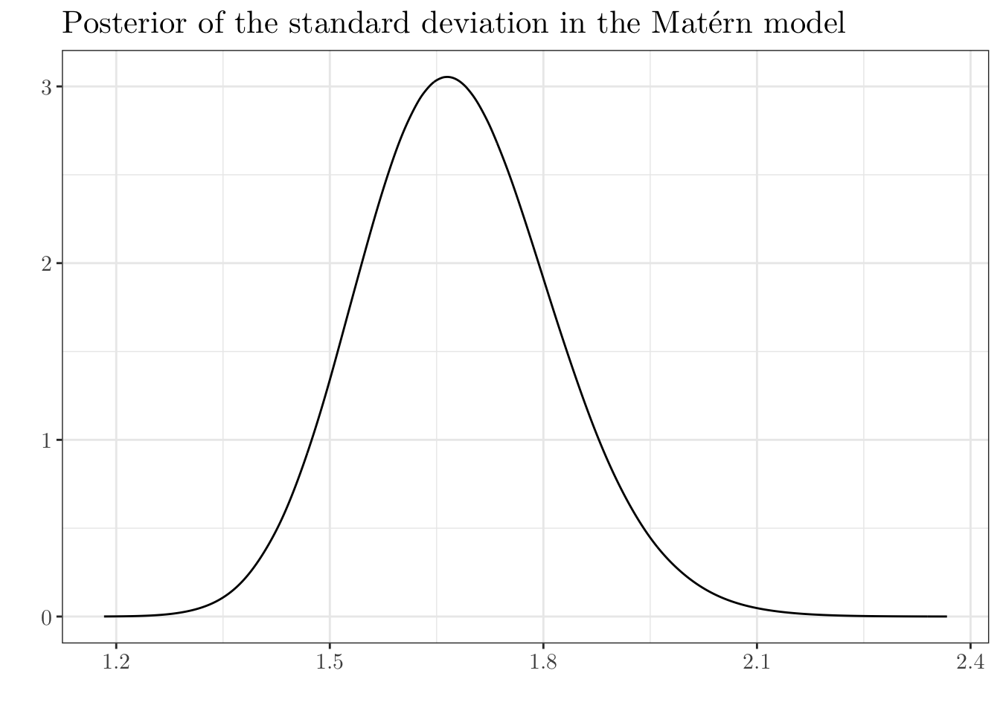

library("INLA")
library("tidyverse")
library("spatstat")
library("raster")
library("sf")
library("rgeos")
library("MASS")
library("spdep")
library("patchwork")INLA Tutorial
In this tutorial, we will use the following R packages.
To install INLA, you can follow the instruction here. Alternatively,
install.packages("INLA", repos = c(getOption("repos"), INLA = "https://inla.r-inla-download.org/R/stable"), dep = TRUE) Along the tutorial, we will use the following common theme and colors for the plots with ggplot2
pal <- c("#00008FFF", "#0000F2FF", "#0063FFFF", "#00D4FFFF", "#46FFB8FF", "#B8FF46FF", "#FFD400FF", "#FF6300FF", "#F00000FF", "#800000FF")
custom_theme <- theme_bw() + theme(legend.position = "right",
text = element_text(size = 14),
plot.title = element_text(size = 16),
legend.title = element_text(size = 12))INLA
In a nutshell, the integrated nested Laplace approximation (INLA) (Rue et al., 2009) method is used to approximate Bayesian inference in latent Gaussian models. In particular, it can be used to fit models of the form \begin{align*} y_i|S(x_i), &\theta \sim \pi(y_i|S(x_i), \theta), \text{ for } i \in \{1, \cdots, n\} \\ S(x)|\theta &\sim \text{Normal}(\mu(\theta), Q(\theta)^{-1}) \\ \theta &\sim \pi(\theta), \end{align*} where y = (y_1, \ldots, y_n) is the vector or observed values, x = (x_1, \ldots, x_n) is a Gaussian random field, and \theta = (\theta_1, \ldots, \theta_k), for some k \in \mathbb{N}, is a vector of hyperparameters. \mu(\theta) and Q(\theta) represent the mean vector and the precision matrix, respectively.
The observed values y_i, \forall i, are assumed to have mean \mu_i=g^{-1}(\eta_i), such that the linear prediction \eta_i can be expressed as follows \begin{align*} \eta_i = \alpha + \sum^{n_{\beta}}_{k = 1} \beta_k z_{ki} + \sum_{j = 1}^{n_f}f^{(j)}(u_{ij}) + \varepsilon_i, \forall i, \end{align*} where \alpha is the intercept, \{\beta_k\}_k, are the coefficients of covariates \{z_{ki}\}_{ki}, and \{f^{(j)}\}_j define some random effects in terms of covariates \{u_{ij}\}_{ij}. Lastly, \varepsilon_i is an error term.
In this formulation, \{f^{(j)}\}_j will be commonly defined as spatio(-temporal) structures—at least for the purposes of this tutorial.
Multiple linear regression
Let us start with a multiple linear regression problem, so that we can get to know the INLA notation and how to extract the desired quantities. This example was extracted from Bayesian Inference with INLA (Gómez-Rubio, 2021).
We will analyze the cement data set from the MASS package. x1, x2, x3, and x4 represent the percentages of the four main chemical ingredients in the setting of 13 cements, and y measures the heat evolved.
summary(cement) x1 x2 x3 x4 y
Min. : 1.000 Min. :26.00 Min. : 4.00 Min. : 6 Min. : 72.50
1st Qu.: 2.000 1st Qu.:31.00 1st Qu.: 8.00 1st Qu.:20 1st Qu.: 83.80
Median : 7.000 Median :52.00 Median : 9.00 Median :26 Median : 95.90
Mean : 7.462 Mean :48.15 Mean :11.77 Mean :30 Mean : 95.42
3rd Qu.:11.000 3rd Qu.:56.00 3rd Qu.:17.00 3rd Qu.:44 3rd Qu.:109.20
Max. :21.000 Max. :71.00 Max. :23.00 Max. :60 Max. :115.90 Let us add another data point for prediction.
cement <- rbind(cement, data.frame(x1 = 24, x2 = 24, x3 = 24, x4 = 24, y = NA))And let us fit the following model \begin{align*} y_i = \alpha + \sum_{j = 1}^{4} \beta_j x_{ji} + \varepsilon_i, \forall i, \end{align*} where \varepsilon_i\overset{\text{i.i.d.}}{\sim}\text{Normal}(0, 1/\tau).
formula_1 <- y ~ 0 + 1 + x1 + x2 + x3 + x4model_1_1 <- inla(formula = formula_1,
family = "gaussian",
data = cement,
control.predictor = list(compute = TRUE)) # Should the marginals for the linear predictor be computed?summary(model_1_1)
Call:
c("inla.core(formula = formula, family = family, contrasts = contrasts,
", " data = data, quantiles = quantiles, E = E, offset = offset, ", "
scale = scale, weights = weights, Ntrials = Ntrials, strata = strata,
", " lp.scale = lp.scale, link.covariates = link.covariates, verbose =
verbose, ", " lincomb = lincomb, selection = selection, control.compute
= control.compute, ", " control.predictor = control.predictor,
control.family = control.family, ", " control.inla = control.inla,
control.fixed = control.fixed, ", " control.mode = control.mode,
control.expert = control.expert, ", " control.hazard = control.hazard,
control.lincomb = control.lincomb, ", " control.update =
control.update, control.lp.scale = control.lp.scale, ", "
control.pardiso = control.pardiso, only.hyperparam = only.hyperparam,
", " inla.call = inla.call, inla.arg = inla.arg, num.threads =
num.threads, ", " keep = keep, working.directory = working.directory,
silent = silent, ", " inla.mode = inla.mode, safe = FALSE, debug =
debug, .parent.frame = .parent.frame)" )
Time used:
Pre = 1.98, Running = 0.553, Post = 0.0266, Total = 2.56
Fixed effects:
mean sd 0.025quant 0.5quant 0.975quant mode kld
(Intercept) 62.503 68.255 -73.838 62.492 198.907 62.494 0
x1 1.550 0.725 0.100 1.550 2.999 1.550 0
x2 0.509 0.705 -0.900 0.509 1.918 0.509 0
x3 0.101 0.735 -1.368 0.101 1.569 0.101 0
x4 -0.145 0.691 -1.525 -0.145 1.235 -0.145 0
Model hyperparameters:
mean sd 0.025quant 0.5quant
Precision for the Gaussian observations 0.209 0.093 0.069 0.195
0.975quant mode
Precision for the Gaussian observations 0.428 0.168
Marginal log-Likelihood: -59.58
is computed
Posterior summaries for the linear predictor and the fitted values are computed
(Posterior marginals needs also 'control.compute=list(return.marginals.predictor=TRUE)')# model_1_1$summary.fixed # Estimated fixed effects
# model_1_1$summary.hyperpar # Estimated hyperparameters
# model_1_1$summary.linear.predictor # Estimated values for the linear predictor
model_1_1$summary.fitted.values[, 1:5] # Fitted values (+ prediction) mean sd 0.025quant 0.5quant 0.975quant
fitted.Predictor.01 78.49487 1.7599239 74.97938 78.49473 82.01162
fitted.Predictor.02 72.78996 1.3694565 70.05488 72.78971 75.52689
fitted.Predictor.03 105.97348 1.8005797 102.37782 105.97307 109.57220
fitted.Predictor.04 89.32802 1.2889907 86.75361 89.32781 91.90409
fitted.Predictor.05 95.64936 1.4188557 92.81527 95.64921 98.48472
fitted.Predictor.06 105.27493 0.8360121 103.60514 105.27482 106.94566
fitted.Predictor.07 104.14886 1.4375734 101.27740 104.14870 107.02165
fitted.Predictor.08 75.67461 1.5164313 72.64548 75.67450 78.70480
fitted.Predictor.09 91.72304 1.2866716 89.15342 91.72278 94.29458
fitted.Predictor.10 115.61786 1.9856102 111.65149 115.61772 119.58554
fitted.Predictor.11 81.80842 1.5474777 78.71723 81.80833 84.90056
fitted.Predictor.12 112.32632 1.2164048 109.89641 112.32627 114.75683
fitted.Predictor.13 111.69378 1.3073368 109.08228 111.69371 114.30606
fitted.Predictor.14 110.86481 5.9359151 99.00816 110.86418 122.72683INLA has numerous functions to process the posterior marginals. For instance, inla.smarginal() is used to obtain a spline smoothing.
alpha <- model_1_1$marginals.fixed[[1]]
ggplot(data.frame(inla.smarginal(alpha)), aes(x, y)) +
geom_line() +
labs(x = "", y = "", title = "Posterior of alpha") +
custom_themeinla.qmarginal() and inla.pmarginal() compute the quantile and distribution function, respectively.
qq <- inla.qmarginal(0.05, alpha)
qq[1] -48.42291inla.pmarginal(qq, alpha)[1] 0.05inla.dmarginal() computes the density at particular values.
inla.dmarginal(0, alpha)[1] 0.003704535inla.tmarginal() transforms the marginal. This is useful, e.g., to obtain the posterior distribution of the 1 / \tau.
sigma_2 <- inla.tmarginal(fun = function(x) { 1 / x }, marginal = model_1_1$marginals.hyperpar$`Precision for the Gaussian observations`)
ggplot(data.frame(inla.smarginal(sigma_2))) +
geom_line(aes(x, y)) +
labs(x = "", y = "", title = "Posterior of the variance") +
custom_themeComplementary, we can also plot the posterior distribution of the fitted values.
post_fitted <- model_1_1$marginals.fitted.values
post_margin <- data.frame(do.call(rbind, post_fitted))
post_margin$cement <- rep(names(post_fitted), times = sapply(post_fitted, nrow))
ggplot(post_margin) +
geom_line(aes(x, y)) +
facet_wrap(~ cement, ncol = 5) +
labs(x = "", y = "Density") +
custom_themeGeneralized linear models (for disease mapping)
Next, let us fit a generalized linear model (GLM) for a problem in disease mapping. Initially, we will ignore the underlying spatial structure, but we will consider it in the following part. This example was extracted from Geospatial Health Data: Modeling and Visualization with R-INLA and Shiny (Moraga, 2019).
We will model the number of cases of lung cancer in Ohio, USA, from 1968 to 1988. The data can be downloaded from here.
After downloading the data, we can do the following
# Load data
d_ohio <- read_csv(file = "data/example_2/data_ohio.csv", show_col_types = FALSE)
m_ohio <- read_sf(dsn = "data/example_2/ohio_shapefile/", layer = "fe_2007_39_county")
head(d_ohio)# A tibble: 6 × 7
county gender race year y n NAME
<dbl> <dbl> <dbl> <dbl> <dbl> <dbl> <chr>
1 1 1 1 1968 6 8912 Adams
2 1 1 1 1969 5 9139 Adams
3 1 1 1 1970 8 9455 Adams
4 1 1 1 1971 5 9876 Adams
5 1 1 1 1972 8 10281 Adams
6 1 1 1 1973 5 10876 Adamsplot(m_ohio$geometry)For this problem, we would like to model the relative risk of cancer in a certain region. To do so, we can compute first the “standardized incidence ratio” (SIR).
Let Y_i denote the number of cases in the location i, then \begin{align*} \text{SIR}_i = \frac{Y_i}{E_i}, \forall i, \end{align*} where \begin{align*} E_i = \sum_{j = 1}^{m} r_j^{(s)} \cdot n_j^{(i)}, \end{align*} such that r_j^{(s)} represents the rate in stratum j in the standard population, and n_j^{(i)} is the population in stratum j of location i.
We can compute the SIR as follows (expected() was extracted from the SpatialEpi package)
# Extracted from `SpatialEpi`
expected <- function (population, cases, n.strata, ...) {
n <- length(population) / n.strata
E <- rep(0, n)
qNum <- rep(0, n.strata)
qDenom <- rep(0, n.strata)
q <- rep(0, n.strata)
# Compute strata-specific rates
for (i in 1:n.strata) {
indices <- rep(i, n) + seq(0, (n - 1)) * n.strata
qNum[i] <- qNum[i] + sum(cases[indices])
qDenom[i] <- qDenom[i] + sum(population[indices])
}
q <- qNum / qDenom
# Compute expected counts
for (i in 1:n) {
indices <- (1:n.strata) + (i - 1) * n.strata
E[i] <- sum(population[indices] * q)
}
E
}################
# Process data #
################
# Observed number of cases
d <- d_ohio %>% group_by(NAME, year) %>% summarise(Y = sum(y)) %>% ungroup() %>% rename(county = NAME) %>% arrange(county, year)
# Expected cases
d_ohio <- d_ohio %>% arrange(county, year, gender, race)
n.strata <- 4 # 2 genders x 2 races
E <- expected(population = d_ohio$n, cases = d_ohio$y, n.strata = n.strata)
# Compute SIR
n_years <- length(unique(d_ohio$year))
n_counties <- length(unique(d_ohio$NAME))
counties_E <- rep(unique(d_ohio$NAME), each = n_years)
years_E <- rep(unique(d_ohio$year), times = n_counties)
d_E <- data.frame(county = counties_E, year = years_E, E = E)
d <- d %>% left_join(y = d_E, by = c("county", "year"))
d <- d %>% mutate(SIR = Y / E)
# Link map information
d_wide <- d %>% pivot_wider(names_from = year, values_from = c(Y, E, SIR), names_glue = "{.value}.{year}") # `wide` format
m_ohio <- m_ohio %>% rename(county = NAME) %>% left_join(y = d_wide, by = c("county")) %>% dplyr::select(c(colnames(d_wide), "geometry"))
s_cols <- setdiff(colnames(m_ohio), c("county", "geometry")) # to `long` format
m_ohio <- m_ohio %>%
pivot_longer(cols = all_of(s_cols), names_to = c(".value", "year"), names_sep = "\\.") %>%
dplyr::select(county, year, Y, E, SIR, geometry) %>%
mutate(year = as.numeric(year)) %>%
arrange(county, year)
head(m_ohio)Simple feature collection with 6 features and 5 fields
Geometry type: POLYGON
Dimension: XY
Bounding box: xmin: -83.70532 ymin: 38.59659 xmax: -83.26755 ymax: 39.0552
Geodetic CRS: NAD83
# A tibble: 6 × 6
county year Y E SIR geometry
<chr> <dbl> <dbl> <dbl> <dbl> <POLYGON [°]>
1 Adams 1968 6 8.28 0.725 ((-83.67511 38.99929, -83.67486 38.99965, -83.…
2 Adams 1969 5 8.50 0.588 ((-83.67511 38.99929, -83.67486 38.99965, -83.…
3 Adams 1970 9 8.78 1.03 ((-83.67511 38.99929, -83.67486 38.99965, -83.…
4 Adams 1971 6 9.18 0.654 ((-83.67511 38.99929, -83.67486 38.99965, -83.…
5 Adams 1972 10 9.55 1.05 ((-83.67511 38.99929, -83.67486 38.99965, -83.…
6 Adams 1973 7 10.1 0.693 ((-83.67511 38.99929, -83.67486 38.99965, -83.…Now, we can plot the computed SIR for all locations for all years.
ggplot(m_ohio) +
geom_sf(aes(fill = SIR)) +
facet_wrap(~ year, ncol = 7) +
scale_fill_gradient2(name = "SIR", midpoint = 1, low = "blue", mid = "white", high = "red") +
labs(x = "", y = "") +
custom_theme +
theme(axis.text.x = element_blank(),
axis.text.y = element_blank(),
axis.ticks = element_blank())However, if there exist locations with small population or expected counts, SIR may be unreliable. To overcome this issue, we will model the relative risk as follows
\begin{align*} Y_i &\sim \text{Poisson}(E_i \theta_i), \forall i,\\ \log(\theta_i) &= \alpha + \sum_{j = 1}^{n_f}f^{(j)}(u_{ij}) \end{align*} where the relative risk \theta_i quantifies whether the location i has higher (>1) or lower (<1) risk than the average risk in the standard population. We will experiment with different structures (if any) for the random effects.
Aiming to implement the random effects, let us include an index for area and time in our data set.
# Create indices for random effects
m_ohio <- m_ohio %>% mutate(id_area = as.numeric(as.factor(county)),
id_time = (1 + year - min(year)))However, we will with data corresponding to 1988 only (we will consider a spatio-temporal structure later).
data <- m_ohio %>% filter(year == 1988)No random effects
formula_1 <- Y ~ 0 + 1model_2_1 <- inla(formula = formula_1,
family = "poisson",
data = data,
E = E, # Known component in the mean for the Poisson likelihoods
control.predictor = list(compute = TRUE),
control.compute = list(cpo = TRUE,
dic = TRUE,
waic = TRUE)) # For model comparisonNotice that we are computing cpo, dic, and waic, so that we can compare models.
summary(model_2_1)
Call:
c("inla.core(formula = formula, family = family, contrasts = contrasts,
", " data = data, quantiles = quantiles, E = E, offset = offset, ", "
scale = scale, weights = weights, Ntrials = Ntrials, strata = strata,
", " lp.scale = lp.scale, link.covariates = link.covariates, verbose =
verbose, ", " lincomb = lincomb, selection = selection, control.compute
= control.compute, ", " control.predictor = control.predictor,
control.family = control.family, ", " control.inla = control.inla,
control.fixed = control.fixed, ", " control.mode = control.mode,
control.expert = control.expert, ", " control.hazard = control.hazard,
control.lincomb = control.lincomb, ", " control.update =
control.update, control.lp.scale = control.lp.scale, ", "
control.pardiso = control.pardiso, only.hyperparam = only.hyperparam,
", " inla.call = inla.call, inla.arg = inla.arg, num.threads =
num.threads, ", " keep = keep, working.directory = working.directory,
silent = silent, ", " inla.mode = inla.mode, safe = FALSE, debug =
debug, .parent.frame = .parent.frame)" )
Time used:
Pre = 2.09, Running = 0.524, Post = 0.0224, Total = 2.64
Fixed effects:
mean sd 0.025quant 0.5quant 0.975quant mode kld
(Intercept) 0.279 0.012 0.254 0.279 0.303 0.279 0
Deviance Information Criterion (DIC) ...............: 778.76
Deviance Information Criterion (DIC, saturated) ....: 303.57
Effective number of parameters .....................: 1.00
Watanabe-Akaike information criterion (WAIC) ...: 783.13
Effective number of parameters .................: 5.02
Marginal log-Likelihood: -391.85
CPO, PIT is computed
Posterior summaries for the linear predictor and the fitted values are computed
(Posterior marginals needs also 'control.compute=list(return.marginals.predictor=TRUE)')For later use, let us create the function table_model_comparison to print a table for model comparison.
table_model_comparison <- function (models, ...) {
n_models <- length(models)
df <- as.data.frame(matrix(data = 0, nrow = n_models, ncol = 3))
rownames(df) <- names(models)
colnames(df) <- c("CPO", "DIC", "WAIC")
for (i in 1:n_models) {
tmp_CPO <- sum(log(models[[i]]$cpo$cpo)) * -1
tmp_DIC <- models[[i]]$dic$dic
tmp_WAIC <- models[[i]]$waic$waic
df[i, ] <- c(tmp_CPO, tmp_DIC, tmp_WAIC)
}
df
}IID model
Y ~ 0 + 1 + f(id_area, model = "iid")Y ~ 0 + 1 + f(id_area, model = "iid")model_2_2 <- inla(formula = formula_2,
family = "poisson",
data = data,
E = E,
control.predictor = list(compute = TRUE),
control.compute = list(cpo = TRUE,
dic = TRUE,
waic = TRUE)) summary(model_2_2)
Call:
c("inla.core(formula = formula, family = family, contrasts = contrasts,
", " data = data, quantiles = quantiles, E = E, offset = offset, ", "
scale = scale, weights = weights, Ntrials = Ntrials, strata = strata,
", " lp.scale = lp.scale, link.covariates = link.covariates, verbose =
verbose, ", " lincomb = lincomb, selection = selection, control.compute
= control.compute, ", " control.predictor = control.predictor,
control.family = control.family, ", " control.inla = control.inla,
control.fixed = control.fixed, ", " control.mode = control.mode,
control.expert = control.expert, ", " control.hazard = control.hazard,
control.lincomb = control.lincomb, ", " control.update =
control.update, control.lp.scale = control.lp.scale, ", "
control.pardiso = control.pardiso, only.hyperparam = only.hyperparam,
", " inla.call = inla.call, inla.arg = inla.arg, num.threads =
num.threads, ", " keep = keep, working.directory = working.directory,
silent = silent, ", " inla.mode = inla.mode, safe = FALSE, debug =
debug, .parent.frame = .parent.frame)" )
Time used:
Pre = 1.8, Running = 0.521, Post = 0.0273, Total = 2.35
Fixed effects:
mean sd 0.025quant 0.5quant 0.975quant mode kld
(Intercept) 0.198 0.032 0.134 0.198 0.259 0.198 0
Random effects:
Name Model
id_area IID model
Model hyperparameters:
mean sd 0.025quant 0.5quant 0.975quant mode
Precision for id_area 19.94 5.20 11.86 19.23 32.05 17.94
Deviance Information Criterion (DIC) ...............: 626.58
Deviance Information Criterion (DIC, saturated) ....: 151.39
Effective number of parameters .....................: 55.70
Watanabe-Akaike information criterion (WAIC) ...: 624.54
Effective number of parameters .................: 40.09
Marginal log-Likelihood: -346.57
CPO, PIT is computed
Posterior summaries for the linear predictor and the fitted values are computed
(Posterior marginals needs also 'control.compute=list(return.marginals.predictor=TRUE)')# Model comparison
table_model_comparison(models = list(model_2_1 = model_2_1, model_2_2 = model_2_2)) CPO DIC WAIC
model_2_1 391.6097 778.7631 783.1293
model_2_2 354.8703 626.5815 624.5403Intrinsic Conditional Auto-Regressive (ICAR) model
Alternatively, we can also account for the spatial dependence that may exist underlying our observed counts.
To do so, the first thing we have to do is determining the neighboring structure for the analyzed region. This can be done by using the poly2nb() function from the spdep package.
nb <- poly2nb(data$geometry)
head(nb)[[1]]
[1] 8 36 66 73
[[2]]
[1] 6 32 33 69 81
[[3]]
[1] 38 39 42 47 52 70 85
[[4]]
[1] 28 43 78
[[5]]
[1] 37 53 58 64 82 84
[[6]]
[1] 2 33 46 54 75 81# Save matrix for later use within INLA
nb2INLA("data/example_2/map.adj", nb)
g <- inla.read.graph(filename = "data/example_2/map.adj")Then we can fit a iid + besag model.
Remark: in INLA, we can always use inla.doc() to view the documentation (e.g., parameterization) of models.
# Example: `besag`
inla.doc("besag")In this case, we are fitting a model such that
\begin{align*} \log(\theta_i) = \alpha + u_i + v_i, \end{align*} such that u_i is a random effect specific to area i to model spatial dependence between the relative risks, and v_i is an unstructured exchangeable component that models uncorrelated noise.
formula_3 <- Y ~ 0 + 1 + f(id_area, model = "iid") + f(id_area_cp, model = "besag", graph = g, scale.model = TRUE)scale.model = TRUE makes the model to be scaled to have an average variance of 1 (Sorbye and Rue, 2014).
model_2_3 <- inla(formula = formula_3,
family = "poisson",
data = data,
E = E,
control.predictor = list(compute = TRUE),
control.compute = list(cpo = TRUE,
dic = TRUE,
waic = TRUE)) summary(model_2_3)
Call:
c("inla.core(formula = formula, family = family, contrasts = contrasts,
", " data = data, quantiles = quantiles, E = E, offset = offset, ", "
scale = scale, weights = weights, Ntrials = Ntrials, strata = strata,
", " lp.scale = lp.scale, link.covariates = link.covariates, verbose =
verbose, ", " lincomb = lincomb, selection = selection, control.compute
= control.compute, ", " control.predictor = control.predictor,
control.family = control.family, ", " control.inla = control.inla,
control.fixed = control.fixed, ", " control.mode = control.mode,
control.expert = control.expert, ", " control.hazard = control.hazard,
control.lincomb = control.lincomb, ", " control.update =
control.update, control.lp.scale = control.lp.scale, ", "
control.pardiso = control.pardiso, only.hyperparam = only.hyperparam,
", " inla.call = inla.call, inla.arg = inla.arg, num.threads =
num.threads, ", " keep = keep, working.directory = working.directory,
silent = silent, ", " inla.mode = inla.mode, safe = FALSE, debug =
debug, .parent.frame = .parent.frame)" )
Time used:
Pre = 1.98, Running = 0.639, Post = 0.0361, Total = 2.66
Fixed effects:
mean sd 0.025quant 0.5quant 0.975quant mode kld
(Intercept) 0.199 0.031 0.136 0.199 0.258 0.199 0
Random effects:
Name Model
id_area IID model
id_area_cp Besags ICAR model
Model hyperparameters:
mean sd 0.025quant 0.5quant 0.975quant mode
Precision for id_area 22.96 8.33e+00 9.90 21.84 42.20 19.75
Precision for id_area_cp 11242.10 1.45e+05 20.52 501.77 64005.04 39.29
Deviance Information Criterion (DIC) ...............: 625.86
Deviance Information Criterion (DIC, saturated) ....: 150.66
Effective number of parameters .....................: 55.11
Watanabe-Akaike information criterion (WAIC) ...: 624.05
Effective number of parameters .................: 39.85
Marginal log-Likelihood: -370.33
CPO, PIT is computed
Posterior summaries for the linear predictor and the fitted values are computed
(Posterior marginals needs also 'control.compute=list(return.marginals.predictor=TRUE)')# Model comparison
table_model_comparison(models = list(model_2_1 = model_2_1, model_2_2 = model_2_2, model_2_3 = model_2_3)) CPO DIC WAIC
model_2_1 391.6097 778.7631 783.1293
model_2_2 354.8703 626.5815 624.5403
model_2_3 352.9770 625.8572 624.0514BYM2 model
As an alternative to iid + besag, we can fit a “Besag, York, and Mollié” (BYM2) model. In this case, we reparameterize the structured u = (u_1, \cdots, u_n) and unstructured v = (v_1, \cdots, v_n) random effects as follows \begin{align*}
b = u + v = \frac{1}{\sqrt{\tau_b}}(\sqrt{1 - \phi}v^{\star} + \sqrt{\phi}u^{\star}),
\end{align*} where \tau_b > 0 is the precision, 0 \leq \phi \leq 1 is a mixing parameter, v^{\star} \sim \text{Normal}(0, I_n) and u^{\star} is a scaled ICAR model.
formula_4 <- Y ~ 0 + 1 + f(id_area, model = "bym2", graph = g)model_2_4 <- inla(formula = formula_4,
family = "poisson",
data = data,
E = E,
control.predictor = list(compute = TRUE),
control.compute = list(cpo = TRUE,
dic = TRUE,
waic = TRUE)) summary(model_2_4)
Call:
c("inla.core(formula = formula, family = family, contrasts = contrasts,
", " data = data, quantiles = quantiles, E = E, offset = offset, ", "
scale = scale, weights = weights, Ntrials = Ntrials, strata = strata,
", " lp.scale = lp.scale, link.covariates = link.covariates, verbose =
verbose, ", " lincomb = lincomb, selection = selection, control.compute
= control.compute, ", " control.predictor = control.predictor,
control.family = control.family, ", " control.inla = control.inla,
control.fixed = control.fixed, ", " control.mode = control.mode,
control.expert = control.expert, ", " control.hazard = control.hazard,
control.lincomb = control.lincomb, ", " control.update =
control.update, control.lp.scale = control.lp.scale, ", "
control.pardiso = control.pardiso, only.hyperparam = only.hyperparam,
", " inla.call = inla.call, inla.arg = inla.arg, num.threads =
num.threads, ", " keep = keep, working.directory = working.directory,
silent = silent, ", " inla.mode = inla.mode, safe = FALSE, debug =
debug, .parent.frame = .parent.frame)" )
Time used:
Pre = 18.1, Running = 0.608, Post = 0.0354, Total = 18.8
Fixed effects:
mean sd 0.025quant 0.5quant 0.975quant mode kld
(Intercept) 0.2 0.029 0.141 0.2 0.255 0.2 0
Random effects:
Name Model
id_area BYM2 model
Model hyperparameters:
mean sd 0.025quant 0.5quant 0.975quant mode
Precision for id_area 19.029 4.779 11.389 18.440 30.08 17.302
Phi for id_area 0.301 0.159 0.064 0.276 0.66 0.201
Deviance Information Criterion (DIC) ...............: 623.35
Deviance Information Criterion (DIC, saturated) ....: 148.16
Effective number of parameters .....................: 55.15
Watanabe-Akaike information criterion (WAIC) ...: 619.32
Effective number of parameters .................: 38.26
Marginal log-Likelihood: -282.48
CPO, PIT is computed
Posterior summaries for the linear predictor and the fitted values are computed
(Posterior marginals needs also 'control.compute=list(return.marginals.predictor=TRUE)')# Model comparison
table_model_comparison(models = list(model_2_1 = model_2_1, model_2_2 = model_2_2, model_2_3 = model_2_3, model_2_4 = model_2_4)) CPO DIC WAIC
model_2_1 391.6097 778.7631 783.1293
model_2_2 354.8703 626.5815 624.5403
model_2_3 352.9770 625.8572 624.0514
model_2_4 348.5249 623.3496 619.3207Penalized Complexity (PC) priors
As before, we can also set different priors before fitting our model. In particular, we can set Penalized Complexity (PC) priors for our bym2 model.
As in Gómez-Rubio (2021),
PC priors are designed following some principles for inference. First of all, the prior favors the base model unless evidence is provided against it, following the principle of parsimony. Distance from the base model is measured using the Kullback-Leibler distance, and penalization from the base model is done at a constant rate on the distance. Finally, the PC prior is defined using probability statements on the model parameters in the appropriate scale.
To define the prior for the marginal precision \tau_b we use the probability statement \mathbb{P}((1/\sqrt{\tau_b}) > U) = \alpha. A prior for \phi is defined using \mathbb{P}(\phi < U) = \alpha.
pc_prior <- list(
prec = list(
prior = "pc.prec",
param = c(1, 0.01)), # P(1 / sqrt(prec) > 1) = 0.01
phi = list(
prior = "pc",
param = c(0.5, 0.75)) # P(phi < 0.5) = 0.75
)From above, notice that \mathbb{P}(\phi < 0.5) = 0.75 implies that we believe that the unstructured effect accounts for more of the variability than the spatially structured effect.
formula_5 <- Y ~ 0 + 1 + f(id_area, model = "bym2", graph = g, hyper = pc_prior)model_2_5 <- inla(formula = formula_5,
family = "poisson",
data = data,
E = E,
control.predictor = list(compute = TRUE),
control.compute = list(cpo = TRUE,
dic = TRUE,
waic = TRUE)) summary(model_2_5)
Call:
c("inla.core(formula = formula, family = family, contrasts = contrasts,
", " data = data, quantiles = quantiles, E = E, offset = offset, ", "
scale = scale, weights = weights, Ntrials = Ntrials, strata = strata,
", " lp.scale = lp.scale, link.covariates = link.covariates, verbose =
verbose, ", " lincomb = lincomb, selection = selection, control.compute
= control.compute, ", " control.predictor = control.predictor,
control.family = control.family, ", " control.inla = control.inla,
control.fixed = control.fixed, ", " control.mode = control.mode,
control.expert = control.expert, ", " control.hazard = control.hazard,
control.lincomb = control.lincomb, ", " control.update =
control.update, control.lp.scale = control.lp.scale, ", "
control.pardiso = control.pardiso, only.hyperparam = only.hyperparam,
", " inla.call = inla.call, inla.arg = inla.arg, num.threads =
num.threads, ", " keep = keep, working.directory = working.directory,
silent = silent, ", " inla.mode = inla.mode, safe = FALSE, debug =
debug, .parent.frame = .parent.frame)" )
Time used:
Pre = 18.8, Running = 0.582, Post = 0.0354, Total = 19.4
Fixed effects:
mean sd 0.025quant 0.5quant 0.975quant mode kld
(Intercept) 0.199 0.029 0.14 0.2 0.256 0.2 0
Random effects:
Name Model
id_area BYM2 model
Model hyperparameters:
mean sd 0.025quant 0.5quant 0.975quant mode
Precision for id_area 19.129 4.784 11.489 18.537 30.202 17.39
Phi for id_area 0.264 0.149 0.052 0.238 0.614 0.16
Deviance Information Criterion (DIC) ...............: 623.44
Deviance Information Criterion (DIC, saturated) ....: 148.24
Effective number of parameters .....................: 55.45
Watanabe-Akaike information criterion (WAIC) ...: 619.13
Effective number of parameters .................: 38.26
Marginal log-Likelihood: -282.44
CPO, PIT is computed
Posterior summaries for the linear predictor and the fitted values are computed
(Posterior marginals needs also 'control.compute=list(return.marginals.predictor=TRUE)')# Model comparison
table_model_comparison(models = list(model_2_1 = model_2_1, model_2_2 = model_2_2, model_2_3 = model_2_3, model_2_4 = model_2_4, model_2_5 = model_2_5)) CPO DIC WAIC
model_2_1 391.6097 778.7631 783.1293
model_2_2 354.8703 626.5815 624.5403
model_2_3 352.9770 625.8572 624.0514
model_2_4 348.5249 623.3496 619.3207
model_2_5 349.0522 623.4366 619.1260Fitted values
Although model_2_4 and model_2_5 are slightly better, for the purpose of this tutorial, we will plot the fitted values based on model_2_3 (iid + besag), so that we can see the estimated unstructured and structured effects separately.
We can retrieve the fitted values by analyzing model_2_3$summary.fitted.values.
fitted_values <- model_2_3$summary.fitted.values[, c("mean", "0.025quant", "0.975quant")] %>%
as_tibble() %>%
mutate(id_area = 1:nrow(data)) %>%
rename(Mean = mean, `0.025` = `0.025quant`, `0.975` = `0.975quant`) %>%
left_join(y = data[, c("county", "geometry", "id_area")], by = "id_area") %>%
dplyr::select(county, Mean, `0.025`, `0.975`, geometry) %>%
pivot_longer(cols = c(Mean, `0.025`, `0.975`)) %>%
mutate(name = factor(name, levels = c("0.025", "Mean", "0.975"))) %>%
st_as_sf()
ggplot(fitted_values) +
geom_sf(aes(fill = value)) +
facet_wrap(~ name, dir = "h", ncol = 3) +
scale_fill_gradient2(name = "Relative risk", midpoint = 1, low = "blue", mid = "white", high = "red") +
labs(x = "", y = "", title = "Estimated \"Relative Risk\" in 1988") +
custom_theme +
theme(axis.text.x = element_blank(),
axis.text.y = element_blank(),
axis.ticks = element_blank())And we can retrieve the summary of the posterior distribution of the random effects by analyzing model_2_3$summary.random.
random_effects <- data[, c("county", "geometry")] %>%
mutate("IID" = model_2_3$summary.random$id_area$mean,
"BESAG" = model_2_3$summary.random$id_area_cp$mean) %>%
pivot_longer(cols = c(IID, BESAG)) %>%
mutate(name = factor(name, levels = c("IID", "BESAG"))) %>%
st_as_sf()
ggplot(random_effects) +
geom_sf(aes(fill = value)) +
facet_wrap(~ name, dir = "h", ncol = 2) +
scale_fill_gradient2(name = "RE", midpoint = 0, low = "blue", mid = "white", high = "red") +
labs(x = "", y = "", title = "Posterior mean of the random effects") +
custom_theme +
theme(axis.text.x = element_blank(),
axis.text.y = element_blank(),
axis.ticks = element_blank())Spatio-temporal models
We will continue analyzing the data set we introduced in the previous section (i.e., number of cases of lung cancer in Ohio, USA, from 1968 to 1988), but now we will also account for the possible temporal dependence that may exist over the years.
data <- m_ohio
head(data)Simple feature collection with 6 features and 7 fields
Geometry type: POLYGON
Dimension: XY
Bounding box: xmin: -83.70532 ymin: 38.59659 xmax: -83.26755 ymax: 39.0552
Geodetic CRS: NAD83
# A tibble: 6 × 8
county year Y E SIR geometry id_area id_time
<chr> <dbl> <dbl> <dbl> <dbl> <POLYGON [°]> <dbl> <dbl>
1 Adams 1968 6 8.28 0.725 ((-83.67511 38.99929, -83.6748… 1 1
2 Adams 1969 5 8.50 0.588 ((-83.67511 38.99929, -83.6748… 1 2
3 Adams 1970 9 8.78 1.03 ((-83.67511 38.99929, -83.6748… 1 3
4 Adams 1971 6 9.18 0.654 ((-83.67511 38.99929, -83.6748… 1 4
5 Adams 1972 10 9.55 1.05 ((-83.67511 38.99929, -83.6748… 1 5
6 Adams 1973 7 10.1 0.693 ((-83.67511 38.99929, -83.6748… 1 6Similar to before, we will model the relative risk as follows \begin{align*} Y_{it} &\sim \text{Poisson}(E_{it} \theta_{it}), \forall i, t, \\ \log(\theta_{it}) &= \alpha + \sum_{j = 1}^{n_f}f^{(j)}(u_{it,j}). \end{align*} However, notice that now all quantities depend on the year (or time, t). The random effects may depend on both space and time with possible interaction.
Replicates
An alternative to model space-time observations is treating them as replicates. In INLA, using replicate implies that replicated effects share the hyperparameters (only). This means that the values of the random effects in the different replicates can be different (Gómez-Rubio, 2021).
formula_1 <- Y ~ 0 + 1 + f(id_area, model = "besag", graph = g, replicate = id_time)model_3_1 <- inla(formula = formula_1,
family = "poisson",
data = data,
E = E,
control.predictor = list(compute = TRUE))summary(model_3_1)
Call:
c("inla.core(formula = formula, family = family, contrasts = contrasts,
", " data = data, quantiles = quantiles, E = E, offset = offset, ", "
scale = scale, weights = weights, Ntrials = Ntrials, strata = strata,
", " lp.scale = lp.scale, link.covariates = link.covariates, verbose =
verbose, ", " lincomb = lincomb, selection = selection, control.compute
= control.compute, ", " control.predictor = control.predictor,
control.family = control.family, ", " control.inla = control.inla,
control.fixed = control.fixed, ", " control.mode = control.mode,
control.expert = control.expert, ", " control.hazard = control.hazard,
control.lincomb = control.lincomb, ", " control.update =
control.update, control.lp.scale = control.lp.scale, ", "
control.pardiso = control.pardiso, only.hyperparam = only.hyperparam,
", " inla.call = inla.call, inla.arg = inla.arg, num.threads =
num.threads, ", " keep = keep, working.directory = working.directory,
silent = silent, ", " inla.mode = inla.mode, safe = FALSE, debug =
debug, .parent.frame = .parent.frame)" )
Time used:
Pre = 2.26, Running = 3.81, Post = 0.2, Total = 6.27
Fixed effects:
mean sd 0.025quant 0.5quant 0.975quant mode kld
(Intercept) -0.089 0.005 -0.099 -0.089 -0.079 -0.089 0
Random effects:
Name Model
id_area Besags ICAR model
Model hyperparameters:
mean sd 0.025quant 0.5quant 0.975quant mode
Precision for id_area 4.30 0.26 3.81 4.29 4.83 4.27
Marginal log-Likelihood: -8822.75
is computed
Posterior summaries for the linear predictor and the fitted values are computed
(Posterior marginals needs also 'control.compute=list(return.marginals.predictor=TRUE)')Aiming to plot the fitted values for the different spatio-temporal approaches, we will use the function plot_rr_years().
plot_rr_years <- function (d, col_name = "fitted.values", temporal_name = "year", tt = "", ...) {
ggplot(d) +
geom_sf(aes(fill = .data[[col_name]])) +
facet_wrap(~ .data[[temporal_name]], dir = "h", ncol = 7) +
scale_fill_gradient2(name = "Relative risk", midpoint = 1, low = "blue", mid = "white", high = "red") +
labs(x = "", y = "", title = tt) +
custom_theme +
theme(axis.text.x = element_blank(),
axis.text.y = element_blank(),
axis.ticks = element_blank())
}data_3_1 <- bind_cols(data[, c("county", "year", "geometry")], fitted.values = model_3_1$summary.fitted.values$mean)
plot_rr_years(d = data_3_1, tt = "Replicates")Additive model
Alternatively, we can fit a model with an additive structure for random effects in space and time. For instance,
\begin{align*} \log(\theta_{it}) = \alpha + u_i + \varrho_t, \end{align*} where u_i \sim \text{ICAR} and, e.g., \varrho_t \sim \text{AR}(1).
formula_2 <- Y ~ 0 + 1 + f(id_time, model = "rw1") + f(id_area, model = "besag", graph = g)model_3_2 <- inla(formula = formula_2,
family = "poisson",
data = data,
E = E,
control.predictor = list(compute = TRUE))summary(model_3_2)
Call:
c("inla.core(formula = formula, family = family, contrasts = contrasts,
", " data = data, quantiles = quantiles, E = E, offset = offset, ", "
scale = scale, weights = weights, Ntrials = Ntrials, strata = strata,
", " lp.scale = lp.scale, link.covariates = link.covariates, verbose =
verbose, ", " lincomb = lincomb, selection = selection, control.compute
= control.compute, ", " control.predictor = control.predictor,
control.family = control.family, ", " control.inla = control.inla,
control.fixed = control.fixed, ", " control.mode = control.mode,
control.expert = control.expert, ", " control.hazard = control.hazard,
control.lincomb = control.lincomb, ", " control.update =
control.update, control.lp.scale = control.lp.scale, ", "
control.pardiso = control.pardiso, only.hyperparam = only.hyperparam,
", " inla.call = inla.call, inla.arg = inla.arg, num.threads =
num.threads, ", " keep = keep, working.directory = working.directory,
silent = silent, ", " inla.mode = inla.mode, safe = FALSE, debug =
debug, .parent.frame = .parent.frame)" )
Time used:
Pre = 1.82, Running = 0.609, Post = 0.0369, Total = 2.46
Fixed effects:
mean sd 0.025quant 0.5quant 0.975quant mode kld
(Intercept) -0.122 0.006 -0.132 -0.122 -0.111 -0.122 0
Random effects:
Name Model
id_time RW1 model
id_area Besags ICAR model
Model hyperparameters:
mean sd 0.025quant 0.5quant 0.975quant mode
Precision for id_time 534.89 181.071 262.98 507.25 967.07 456.29
Precision for id_area 5.85 0.964 4.16 5.78 7.95 5.66
Marginal log-Likelihood: -6008.24
is computed
Posterior summaries for the linear predictor and the fitted values are computed
(Posterior marginals needs also 'control.compute=list(return.marginals.predictor=TRUE)')data_3_2 <- bind_cols(data[, c("county", "year", "geometry")], fitted.values = model_3_2$summary.fitted.values$mean)
plot_rr_years(d = data_3_2, tt = "Additive model")Kronecker product model
A more elaborated solution is to consider a spatio-temporal random effect. In particular, we will fit a grouped (or Kronecker) separable model. A more rigorous motivation for this approach is available here.
In a nutshell, in the grouped random effected,
- There is a within group correlation structure, and
- There is a between group correlation structure.
In particular, if y_{g, i} is the i-the element in group g, then \text{Cov}(y_{g_1, i_1}, y_{g_2, i_2}) = (\text{cov. between groups } g_1 \text{ and } g_2) \times (\text{cov. between elements } i_1 \text{ and } i_2) (Simpson, 2016).
In INLA, the within-group effect is the one defined in the main f() function, while the between effect is the one defined using the control.group argument.
formula_3 <- Y ~ 0 + 1 + f(id_area, model = "besag", graph = g,
group = id_time, control.group = list(model = "rw1"))model_3_3 <- inla(formula = formula_3,
family = "poisson",
data = data,
E = E,
control.predictor = list(compute = TRUE))summary(model_3_3)
Call:
c("inla.core(formula = formula, family = family, contrasts = contrasts,
", " data = data, quantiles = quantiles, E = E, offset = offset, ", "
scale = scale, weights = weights, Ntrials = Ntrials, strata = strata,
", " lp.scale = lp.scale, link.covariates = link.covariates, verbose =
verbose, ", " lincomb = lincomb, selection = selection, control.compute
= control.compute, ", " control.predictor = control.predictor,
control.family = control.family, ", " control.inla = control.inla,
control.fixed = control.fixed, ", " control.mode = control.mode,
control.expert = control.expert, ", " control.hazard = control.hazard,
control.lincomb = control.lincomb, ", " control.update =
control.update, control.lp.scale = control.lp.scale, ", "
control.pardiso = control.pardiso, only.hyperparam = only.hyperparam,
", " inla.call = inla.call, inla.arg = inla.arg, num.threads =
num.threads, ", " keep = keep, working.directory = working.directory,
silent = silent, ", " inla.mode = inla.mode, safe = FALSE, debug =
debug, .parent.frame = .parent.frame)" )
Time used:
Pre = 1.76, Running = 4.32, Post = 0.117, Total = 6.19
Fixed effects:
mean sd 0.025quant 0.5quant 0.975quant mode kld
(Intercept) -0.106 0.006 -0.117 -0.106 -0.095 -0.106 0
Random effects:
Name Model
id_area Besags ICAR model
Model hyperparameters:
mean sd 0.025quant 0.5quant 0.975quant mode
Precision for id_area 17.37 1.93 13.92 17.25 21.46 17.03
Marginal log-Likelihood: -9154.40
is computed
Posterior summaries for the linear predictor and the fitted values are computed
(Posterior marginals needs also 'control.compute=list(return.marginals.predictor=TRUE)')data_3_3 <- bind_cols(data[, c("county", "year", "geometry")], fitted.values = model_3_3$summary.fitted.values$mean)
plot_rr_years(d = data_3_3, tt = "Kronecker product model (grouped by \"time\")")Bernardinelli model
Lastly, we can also implement the Bernardinelli model (Bernardinelli et al., 1995) using INLA. In this case, the linear predictor will be defined as follows
\begin{align*}
\log(\theta_{it}) = \alpha + u_i + v_i + (\beta + \delta_i) \times t_j,
\end{align*} where u_i + v_i is a iid + besag model, \beta is the global linear trend, and \delta_i denotes a space-time interaction; in particular, this model allows each of the areas to have its own time trend with spatial intercept given by (\alpha + u_i + v_i) and slope given by (\beta + \delta_i) (Moraga, 2019).
formula_4 <- Y ~ 0 + 1 + f(id_area, model = "bym", graph = g) + f(id_area_cp, id_time, model = "iid") + id_timemodel_3_4 <- inla(formula = formula_4,
family = "poisson",
data = data,
E = E,
control.predictor = list(compute = TRUE))summary(model_3_4)
Call:
c("inla.core(formula = formula, family = family, contrasts = contrasts,
", " data = data, quantiles = quantiles, E = E, offset = offset, ", "
scale = scale, weights = weights, Ntrials = Ntrials, strata = strata,
", " lp.scale = lp.scale, link.covariates = link.covariates, verbose =
verbose, ", " lincomb = lincomb, selection = selection, control.compute
= control.compute, ", " control.predictor = control.predictor,
control.family = control.family, ", " control.inla = control.inla,
control.fixed = control.fixed, ", " control.mode = control.mode,
control.expert = control.expert, ", " control.hazard = control.hazard,
control.lincomb = control.lincomb, ", " control.update =
control.update, control.lp.scale = control.lp.scale, ", "
control.pardiso = control.pardiso, only.hyperparam = only.hyperparam,
", " inla.call = inla.call, inla.arg = inla.arg, num.threads =
num.threads, ", " keep = keep, working.directory = working.directory,
silent = silent, ", " inla.mode = inla.mode, safe = FALSE, debug =
debug, .parent.frame = .parent.frame)" )
Time used:
Pre = 1.88, Running = 0.631, Post = 0.0372, Total = 2.55
Fixed effects:
mean sd 0.025quant 0.5quant 0.975quant mode kld
(Intercept) -0.528 0.021 -0.570 -0.528 -0.487 -0.528 0
id_time 0.037 0.001 0.035 0.037 0.039 0.037 0
Random effects:
Name Model
id_area BYM model
id_area_cp IID model
Model hyperparameters:
mean sd 0.025quant 0.5quant
Precision for id_area (iid component) 34.24 8.45 20.12 33.40
Precision for id_area (spatial component) 91.53 102.38 13.76 61.33
Precision for id_area_cp 49251.00 17455.34 24120.92 46259.24
0.975quant mode
Precision for id_area (iid component) 53.16 31.96
Precision for id_area (spatial component) 358.12 31.78
Precision for id_area_cp 91906.40 40773.85
Marginal log-Likelihood: -5938.96
is computed
Posterior summaries for the linear predictor and the fitted values are computed
(Posterior marginals needs also 'control.compute=list(return.marginals.predictor=TRUE)')data_3_4 <- bind_cols(data[, c("county", "year", "geometry")], fitted.values = model_3_4$summary.fitted.values$mean)
plot_rr_years(d = data_3_4, tt = "Bernardinelli model")Geostatistical data
Throughout this section, we will assume that \begin{align*} y_i = \mu + \zeta(x_i) + \varepsilon_i, ~\forall i, \end{align*} where y = (y_1, \cdots, y_n) are the observations at x = (x_1, \cdots, x_n), \mu is the common mean, \zeta(x) is a zero-mean stationary and isotropic Gaussian random field, and \varepsilon \overset{\text{i.i.d.}}{\sim}\text{Normal}(0, \sigma^2_{\varepsilon}). In particular, \zeta(x) has a Matérn structure.
Other more sophisticated models are described in Advanced Spatial Modeling with Stochastic Partial Differential Equations Using R and INLA (Krainski et al., 2019).
For fitting such a model, we can rely on a stochastic partial differential equation (SPDE) approach. As showed in Whittle (1963), a Gaussian random field with Matérn covariance structure can be expressed as a solution of the following SPDE \begin{align*} (\kappa^2 - \Delta)^{\alpha/2}(\tau S(x)) = \mathcal{W}(x), \end{align*} where \Delta is the Laplacian, \mathcal{W}(s) is a Gaussian white-noise random process, \alpha controls the smoothness of the random field, \tau controls the variance, and \kappa is a scale parameter.
Based on this result, Lindgren et al. (2011) proposed a new procedure for representing a Gaussian random field with Matérn covariance as a Gaussian Markov Random Field (GMRF). They did this by expressing a solution of the SPDE using the Finite Element Method (FEM).
As in Moraga (2019),
An approximate solution of the SPDE can be found by using the Finite Element method. This method divides the spatial domain into a set of non-intersecting triangles leading to a triangulated mesh with n nodes and n basis functions. Basis functions \{\phi_k(x)\}_{k = 1}^{n} are defined as piecewise linear functions on each triangle that is equal to 1 at vertex k, and equal to 0 at the other vertices. Then, the continuously indexed Gaussian field \zeta is represented as a discretely indexed Gaussian Markov random field (GMRF) by means of the finite basis functions defined on the triangulated mesh \zeta(x) = \sum_{k = 1}^{n} \beta_k \phi_k(x), where n is the number of vertices of the triangulation, \{\phi_k(x)\}_{k = 1}^{n} denotes the piecewise linear basis functions, and \{\beta_k\}_{k = 1}^{n} are zero-mean Gaussian distributed weights.
The smoothness parameter \nu of the Matérn covariance structure is related to \alpha in the SPDE formulation through \alpha = \nu + (d / 2), where d (typically d = 2) is dimension. In INLA, 0 \leq \alpha < 2.
PM2.5
We will analyze the particulate matter 2.5 (PM2.5), measured in \mu \text{g} / \text{m}^3) levels in the United States (USA) in 2022. The data is the same as the one analyzed in Amaral et al. (2023). The data can be downloaded from here.
data_USA <- readRDS(file = "data/example_4/data_USA.rds")
USA <- readRDS(file = "data/example_4/USA_filtered.rds")
head(data_USA)Simple feature collection with 6 features and 2 fields
Geometry type: POINT
Dimension: XY
Bounding box: xmin: 415.5262 ymin: 3374.241 xmax: 611.4046 ymax: 3794.633
Projected CRS: +init=epsg:6345 +units=km +no_defs
# A tibble: 6 × 3
mean sd geometry
<dbl> <dbl> <POINT [km]>
1 7.95 4.52 (415.5262 3374.241)
2 7.3 3.96 (611.4046 3683.513)
3 7.24 3.70 (594.8104 3794.633)
4 8.66 4.20 (593.0379 3761.67)
5 9.75 5.28 (517.1733 3712.617)
6 8.44 3.39 (499.6639 3687.995)ggplot() +
geom_sf(data = USA, fill = "white") +
geom_sf(data = data_USA, aes(fill = mean), color = "black", size = 3, shape = 21) +
scale_fill_gradientn(name = "PM2.5 level", colors = pal) +
labs(x = "", y = "", title = "") +
custom_theme +
theme(axis.text.x = element_blank(),
axis.text.y = element_blank(),
axis.ticks = element_blank())
Now, let us pre-process the data.
# Boundary coordinates
USA_coor <- sf::st_coordinates(USA)
USA_coor <- matrix(c(USA_coor[, 1], USA_coor[, 2]), ncol = 2)
colnames(USA_coor) <- c("lon", "lat")
head(USA_coor) lon lat
[1,] -91.01918 5501.724
[2,] -90.93677 5501.492
[3,] -90.68302 5501.466
[4,] -90.57107 5501.223
[5,] -90.35477 5501.060
[6,] -90.34765 5501.055# Points coordinates
data_coor <- sf::st_coordinates(data_USA)
data_USA <- bind_cols(data_USA, as_tibble(data_coor))
data_USA <- data_USA %>% rename(lon = X, lat = Y) %>% dplyr::select(mean, sd, lon, lat, geometry)
head(data_USA)Simple feature collection with 6 features and 4 fields
Geometry type: POINT
Dimension: XY
Bounding box: xmin: 415.5262 ymin: 3374.241 xmax: 611.4046 ymax: 3794.633
Projected CRS: +init=epsg:6345 +units=km +no_defs
# A tibble: 6 × 5
mean sd lon lat geometry
<dbl> <dbl> <dbl> <dbl> <POINT [km]>
1 7.95 4.52 416. 3374. (415.5262 3374.241)
2 7.3 3.96 611. 3684. (611.4046 3683.513)
3 7.24 3.70 595. 3795. (594.8104 3794.633)
4 8.66 4.20 593. 3762. (593.0379 3761.67)
5 9.75 5.28 517. 3713. (517.1733 3712.617)
6 8.44 3.39 500. 3688. (499.6639 3687.995)And create the mesh with the inla.mesh.2d() function. A tool for mesh assessment is described here.
# `max.edge`: the largest allowed triangle edge length. One or two values.
# `offset`: the automatic extension distance. One or two values, for an inner and an optional outer extension.
mesh <- inla.mesh.2d(loc.domain = USA_coor, max.edge = c(300, 3000), offset = c(300, 1500))
mesh$n # Number of nodes[1] 680# Plot `mesh`
{
plot(mesh)
plot(USA$geometry, lwd = 2, border = "red", add = TRUE)
points(data_USA$lon, data_USA$lat, pch = 1, col = "green")
}We can build the SPDE model using one of the following functions: inla.spde2.matern() or inla.spde2.pcmatern. Notice that the parameterization of these two models is different, such that the latter accepts PC priors.
# Building the SPDE model
# alpha = nu + d / 2 = 1 + 1 = 2, for nu = 1
# Flexible parameterization (with a default one)
# spde <- inla.spde2.matern(mesh = mesh, alpha = 2)
# Parameterization for PC priors
spde <- inla.spde2.pcmatern(mesh = mesh,
alpha = 2,
prior.range = c(1e3, 0.90), # P(range < 1e3) = 0.90
prior.sigma = c(1.0, 0.01)) # P(sigma > 1.0) = 0.01Now, we can create an indxs object for the SPDE model, as well as the projection matrix. The projection matrix depends on the mesh and data_coor and is used to project the Gaussian random field (GRF) from the observations to the triangulation vertices.
# Indices
indxs <- inla.spde.make.index("s", spde$n.spde)
# Projection matrix
A <- inla.spde.make.A(mesh = mesh, loc = data_coor)
dim(A)[1] 928 680To make prediction, we have to define the set of coordinates where we want to estimate the process. Given location boundaries and the desired resolution, the function create_prediction_grid() does the job.
create_prediction_grid <- function (loc, resolution = 25, ...) {
pts_bdy <- loc$geometry[[1]][[1]]
pts_bdy_x <- range(pts_bdy[, 1])
pts_bdy_y <- range(pts_bdy[, 2])
coord_pred <- expand.grid(x = seq(pts_bdy_x[1], pts_bdy_x[2], by = resolution), y = seq(pts_bdy_y[1], pts_bdy_y[2], by = resolution))
coordinates(coord_pred) <- ~ x + y
xx <- as(st_as_sf(coord_pred), "sf"); st_crs(xx) <- st_crs(loc$geometry)
yy <- as(st_as_sf(loc$geometry), "sf"); st_crs(yy) <- st_crs(loc$geometry)
# Compute intersection between grid and `loc` borders
pppts <- st_intersection(x = xx, y = yy)
coord_pred <- matrix(data = NA, nrow = length(pppts$geometry), ncol = 2)
colnames(coord_pred) <- c("x", "y")
for (p in 1:length(pppts$geometry)) { coord_pred[p, ] <- sf::st_coordinates(pppts$geometry[[p]]) }
coord_pred <- data.frame(x = coord_pred[, 1], y = coord_pred[, 2])
as.matrix(coord_pred)
}coord_pred <- create_prediction_grid(USA){
coord_pred_cp <- as.data.frame(coord_pred)
coordinates(coord_pred_cp) <- ~ x + y
plot(coord_pred_cp)
}Similar to before, we must create a projection matrix for the locations where we want to make prediction.
# Projection matrix for prediction
Ap <- inla.spde.make.A(mesh = mesh, loc = coord_pred)Lastly, we can organize the data in stacks.
# Create stacks
# Stack for estimation
stk_e <- inla.stack(tag = "est",
data = list(y = data_USA$mean),
A = list(1, A),
effects = list(data.frame(b0 = rep(1, nrow(data_USA))), s = indxs))
# Stack for prediction
stk_p <- inla.stack(tag = "pred",
data = list(y = NA),
A = list(1, Ap),
effects = list(data.frame(b0 = rep(1, nrow(coord_pred))), s = indxs))
# Full stack
stk_full <- inla.stack(stk_e, stk_p)After all these steps, we can finally fit the model.
formula_1 <- y ~ 0 + b0 + f(s, model = spde)model_4_1 <- inla(formula = formula_1,
family = "gaussian",
data = inla.stack.data(stk_full),
control.predictor = list(compute = TRUE,
A = inla.stack.A(stk_full))) # Matrix of predictorssummary(model_4_1)
Call:
c("inla.core(formula = formula, family = family, contrasts = contrasts,
", " data = data, quantiles = quantiles, E = E, offset = offset, ", "
scale = scale, weights = weights, Ntrials = Ntrials, strata = strata,
", " lp.scale = lp.scale, link.covariates = link.covariates, verbose =
verbose, ", " lincomb = lincomb, selection = selection, control.compute
= control.compute, ", " control.predictor = control.predictor,
control.family = control.family, ", " control.inla = control.inla,
control.fixed = control.fixed, ", " control.mode = control.mode,
control.expert = control.expert, ", " control.hazard = control.hazard,
control.lincomb = control.lincomb, ", " control.update =
control.update, control.lp.scale = control.lp.scale, ", "
control.pardiso = control.pardiso, only.hyperparam = only.hyperparam,
", " inla.call = inla.call, inla.arg = inla.arg, num.threads =
num.threads, ", " keep = keep, working.directory = working.directory,
silent = silent, ", " inla.mode = inla.mode, safe = FALSE, debug =
debug, .parent.frame = .parent.frame)" )
Time used:
Pre = 2.36, Running = 1.89, Post = 0.118, Total = 4.37
Fixed effects:
mean sd 0.025quant 0.5quant 0.975quant mode kld
b0 6.818 0.304 6.208 6.821 7.414 6.821 0
Random effects:
Name Model
s SPDE2 model
Model hyperparameters:
mean sd 0.025quant 0.5quant
Precision for the Gaussian observations 0.592 0.032 0.531 0.591
Range for s 492.618 86.960 345.990 484.328
Stdev for s 1.680 0.136 1.428 1.675
0.975quant mode
Precision for the Gaussian observations 0.656 0.59
Range for s 687.299 466.93
Stdev for s 1.964 1.67
Marginal log-Likelihood: -1721.00
is computed
Posterior summaries for the linear predictor and the fitted values are computed
(Posterior marginals needs also 'control.compute=list(return.marginals.predictor=TRUE)')As we did in the “Multiple linear regression” example, we can work with the posterior marginals.
ss <- inla.tmarginal(fun = function(x) { 1 / sqrt(x) }, marginal = model_4_1$marginals.hyperpar$`Precision for the Gaussian observations`)
ggplot(data.frame(inla.smarginal(ss))) +
geom_line(aes(x, y)) +
labs(x = "", y = "", title = "Posterior of the standard deviation for the observations") +
custom_themeggplot(data.frame(inla.smarginal(model_4_1$marginals.hyperpar$`Range for s`))) +
geom_line(aes(x, y)) +
labs(x = "", y = "", title = "Posterior of the range in the Matérn model") +
custom_themeggplot(data.frame(inla.smarginal(model_4_1$marginals.hyperpar$`Stdev for s`))) +
geom_line(aes(x, y)) +
labs(x = "", y = "", title = "Posterior of the standard deviation in the Matérn model") +
custom_theme
Remark: According to this parameterization, the scale parameter \kappa > 0 can be expressed by \frac{\sqrt{8\nu}}{\text{range}}, where \nu is the smoothness parameter.
Prediction
Now, let us retrieve the predicted values.
# Fitted values and prediction
# Indices for the predicted observations
idxs_pred <- inla.stack.index(stk_full, tag = "pred")$data
pred_mm <- as.data.frame(cbind(coord_pred, model_4_1$summary.fitted.values[idxs_pred, "mean"]))
pred_ll <- as.data.frame(cbind(coord_pred, model_4_1$summary.fitted.values[idxs_pred, "0.025quant"]))
pred_uu <- as.data.frame(cbind(coord_pred, model_4_1$summary.fitted.values[idxs_pred, "0.975quant"]))
# E.g.,
pred_mm %>% as_tibble() %>% rename(posterior_mean = V3) %>% head() # A tibble: 6 × 3
x y posterior_mean
<dbl> <dbl> <dbl>
1 1026. 2733. 7.02
2 1051. 2733. 7.00
3 1076. 2733. 6.96
4 1076. 2758. 7.01
5 1126. 2758. 6.97
6 1101. 2783. 7.00To plot the posterior mean and percentiles, we will use the function plot_pred_USA().
plot_pred_USA <- function (fitted_values, USA, r, tt = "", should_round = TRUE, ...) {
coordinates(fitted_values) <- ~ x + y
gridded(fitted_values) <- TRUE
fitted_values <- raster(fitted_values)
crs(fitted_values) <- "+init=epsg:6345 +units=km +no_defs"
fitted_values <- as(fitted_values, "SpatialPixelsDataFrame")
fitted_values_df <- as.data.frame(fitted_values)
colnames(fitted_values_df) <- c("pred", "x", "y")
if (should_round) {
breaks <- seq(floor(r[1]), ceiling(r[2]), length.out = 5)
} else {
breaks <- seq(r[1], r[2], length.out = 5)
}
pal <- c("#00008FFF", "#0000F2FF", "#0063FFFF", "#00D4FFFF", "#46FFB8FF", "#B8FF46FF", "#FFD400FF", "#FF6300FF", "#F00000FF", "#800000FF")
pp <- ggplot() +
geom_tile(data = fitted_values_df, mapping = aes(x = x, y = y, fill = pred)) +
geom_sf(data = USA, color = "black", fill = NA, lwd = 0.5) +
scale_fill_gradientn(name = "PM2.5", colors = pal, breaks = breaks, limits = c(breaks[1], tail(breaks, 1))) +
labs(x = "", y = "", title = tt) +
custom_theme +
theme(axis.text.x = element_blank(),
axis.text.y = element_blank(),
axis.ticks = element_blank())
pp
} The patchwork package allows us to combine plots.
r_mm <- pred_mm$V3 %>% range()
r_ll <- pred_ll$V3 %>% range()
r_uu <- pred_uu$V3 %>% range()
r <- c(min(r_mm[1], r_ll[1], r_uu[1]), max(r_mm[2], r_ll[2], r_uu[2]))
pp_mm <- plot_pred_USA(fitted_values = pred_mm, USA = USA, r = r, tt = "Mean")
pp_ll <- plot_pred_USA(fitted_values = pred_ll, USA = USA, r = r, tt = "2.5th")
pp_uu <- plot_pred_USA(fitted_values = pred_uu, USA = USA, r = r, tt = "97.5th")
(pp_ll + pp_mm + pp_uu) + plot_layout(guides = "collect") & theme(legend.position = "right")Point processes
In this section, we will see how to model a log-Gaussian Cox process (LGCP) using INLA. However, one can refer to this tutorial for a more detailed explanation on how to make inference in point processes (also using INLA).
Recall that
A Cox process can be seen as a doubly stochastic process. \xi is a Cox process driven by \Lambda(x) if
\{\Lambda(x); x \in \mathcal{D}\} is a non-negative valued stochastic process.
Conditional on \{\Lambda(x) = \lambda(x); \mathbf{x} \in \mathcal{D}\}, \xi is a Poisson process with intensity function \lambda(x).
A particular case of a Cox process, named log-Gaussian Cox process, can be constructed by setting \log(\Lambda(x)) = \mu^{\star}(x) + \zeta(x), such that \mu(x) = \exp(\mu^{\star}(x)) is possibly interpreted as the mean structure of \Lambda(x), and \zeta(x) is a stationary Gaussian process, such that \mathbb{E}(\zeta(x)) = -\sigma^2/2, \forall x, and \text{Cov}(\zeta(x_1), \zeta(x_2)) = \phi(h) = \sigma^2 \rho(h), where h is the distance between x_1 and x_2, and \sigma^2 is the variance of \zeta(x).
As we can see here, a way to fit a LGCP with INLA is placing a regular grid, given by cells \{c_{ij}\}_{ij}, on top of the spatial domain, such that \int_{c_{i,j}}\Lambda(x)dx \approx |c_{i,j}|\Lambda(x), where |\cdot| denotes the area.
Thus, conditional on \zeta(x), the number of locations in the grid cell c_{ij}, \forall i, j, are independent and Poisson distributed, such that \begin{align*}
\mathcal{N}(c_{ij})|\zeta(x) &\sim \text{Poisson}(|c_{ij}| \Lambda(x_{ij})), \forall i, j, \\
\log(\Lambda(x_{ij})) &= \alpha + \cdots + \zeta(x_{ij})
\end{align*} where \zeta(x) is a Gaussian field (e.g., matern2d).
However, Simpson et al.(2016) proposed a method to make inference on LGCP while still considering the exact observation locations—instead of aggregating them over a regular grid and fitting a counting model for each cell.
The main idea consists of an approximation of the likelihood by fitting a Poisson model on an augmented data set made of the observation locations and integration points from the corresponding SPDE mesh (1 for the observed points and 0 for the dummy variables, such that all have associated “expected values” e). The expected number of events in the integration points is defined to be proportional to the area around the node (the areas of the polygons in the dual mesh)
Remark: The main reference for this section (and the next one) is Chapter 4: Point processes and preferential sampling.
PM2.5 stations
Although the problem of estimating PM2.5 depends, obviously, on the observed pollution levels, we will ignore it for now and focus on the sampling process, i.e., the locations where the monitoring stations were placed and treat them as a realization of a random process. In particular, a LGCP.
head(data_USA)Simple feature collection with 6 features and 4 fields
Geometry type: POINT
Dimension: XY
Bounding box: xmin: 415.5262 ymin: 3374.241 xmax: 611.4046 ymax: 3794.633
Projected CRS: +init=epsg:6345 +units=km +no_defs
# A tibble: 6 × 5
mean sd lon lat geometry
<dbl> <dbl> <dbl> <dbl> <POINT [km]>
1 7.95 4.52 416. 3374. (415.5262 3374.241)
2 7.3 3.96 611. 3684. (611.4046 3683.513)
3 7.24 3.70 595. 3795. (594.8104 3794.633)
4 8.66 4.20 593. 3762. (593.0379 3761.67)
5 9.75 5.28 517. 3713. (517.1733 3712.617)
6 8.44 3.39 500. 3688. (499.6639 3687.995)ggplot() +
geom_sf(data = USA, fill = "white") +
geom_sf(data = data_USA, color = "black", size = 3, shape = 3) +
labs(x = "", y = "", title = "") +
custom_theme +
theme(axis.text.x = element_blank(),
axis.text.y = element_blank(),
axis.ticks = element_blank())We will also use the data pre-processed in the previous section.
head(data_coor) X Y
[1,] 415.5262 3374.241
[2,] 611.4046 3683.513
[3,] 594.8104 3794.633
[4,] 593.0379 3761.670
[5,] 517.1733 3712.617
[6,] 499.6639 3687.995head(USA_coor) lon lat
[1,] -91.01918 5501.724
[2,] -90.93677 5501.492
[3,] -90.68302 5501.466
[4,] -90.57107 5501.223
[5,] -90.35477 5501.060
[6,] -90.34765 5501.055Let us start with the mesh and the SPDE model. For the former, we will use the same object (mesh) we created for the previous section, for the latter, we may want to use different priors.
plot(mesh)spde <- inla.spde2.pcmatern(mesh = mesh,
alpha = 2,
prior.range = c(1e3, 0.90), # P(range < 1e3) = 0.90
prior.sigma = c(1.0, 0.01)) # P(sigma > 1.0) = 0.01We can then built the dual mesh using the function inla.dual.mesh() (extracted from Advanced Spatial Modeling with Stochastic Partial Differential Equations Using R and INLA).
inla.dual.mesh <- function (mesh, ...) {
if (mesh$manifold == "R2") {
ce <- t(sapply(1:nrow(mesh$graph$tv), function (i) { colMeans(mesh$loc[mesh$graph$tv[i, ], 1:2]) }))
library("parallel")
pls <- mclapply(1:mesh$n, function (i) {
p <- unique(Reduce("rbind", lapply(1:3, function (k) {
j <- which(mesh$graph$tv[,k] == i)
if (length(j) > 0) {
return(rbind(ce[j, , drop = FALSE],
cbind(mesh$loc[mesh$graph$tv[j, k], 1] + mesh$loc[mesh$graph$tv[j, c(2:3, 1)[k]], 1],
mesh$loc[mesh$graph$tv[j, k], 2] + mesh$loc[mesh$graph$tv[j, c(2:3, 1)[k]], 2]) / 2))
} else {
return(ce[j, , drop = FALSE])
}
})))
j1 <- which(mesh$segm$bnd$idx[, 1] == i)
j2 <- which(mesh$segm$bnd$idx[, 2] == i)
if ((length(j1) > 0) | (length(j2) > 0)) {
p <- unique(rbind(mesh$loc[i, 1:2], p,
mesh$loc[mesh$segm$bnd$idx[j1, 1], 1:2] / 2 + mesh$loc[mesh$segm$bnd$idx[j1, 2], 1:2] / 2,
mesh$loc[mesh$segm$bnd$idx[j2, 1], 1:2] / 2 + mesh$loc[mesh$segm$bnd$idx[j2, 2], 1:2] / 2))
yy <- p[, 2] - mean(p[, 2]) / 2 - mesh$loc[i, 2] / 2
xx <- p[, 1] - mean(p[, 1]) / 2 - mesh$loc[i, 1] / 2
} else {
yy <- p[, 2] - mesh$loc[i, 2]
xx <- p[, 1] - mesh$loc[i, 1]
}
Polygon(p[order(atan2(yy, xx)), ])
})
return(SpatialPolygons(lapply(1:mesh$n, function (i) { Polygons(list(pls[[i]]), i)} )))
}
else { stop("It only works for R2.") }
}dual_mesh <- inla.dual.mesh(mesh)Now, we can compute the weights (wgt) based on the dual mesh, such that the regions outside of the location boundaries have weight 0.
USA_poly <- SpatialPolygons(list(Polygons(list(Polygon(USA_coor)), ID = "1")))
wgt <- sapply(1:length(dual_mesh), function (i) {
if (gIntersects(dual_mesh[i, ], USA_poly)) {
return(gArea(gIntersection(dual_mesh[i, ], USA_poly)))
} else {
return(0)
}
})hist(wgt, main = "")# Plotting dual mesh color coded based on the `wgt`
{
plot(mesh$loc, asp = 1, col = (wgt == 0) + 1, pch = 19, xlab = "", ylab = "", axes = F, cex = 0.6)
plot(mesh, add = TRUE)
plot(dual_mesh, add = TRUE)
plot(USA$geometry, add = TRUE, border = "green", lwd = 2)
}As before, we must construct the projection matrices and format the data in the “right” way (i.e., in stacks). For prediction, we use assume the same coord_pred as in the previous section.
head(coord_pred) x y
[1,] 1025.571 2732.56
[2,] 1050.571 2732.56
[3,] 1075.571 2732.56
[4,] 1075.571 2757.56
[5,] 1125.571 2757.56
[6,] 1100.571 2782.56n_vtx <- mesh$n
n_pts <- nrow(data_USA)
n_pts_pred <- nrow(coord_pred)
# Indices
indxs <- inla.spde.make.index("s", spde$n.spde)
# augmented data: `0` for the mesh nodes and `1` for the observations
y_pp <- rep(0:1, c(n_vtx, n_pts))
# Exposure vector
e_pp <- c(wgt, rep(0, n_pts))
# Projection matrix (in two parts)
# (1) For the integration points, this is just a diagonal matrix--as these locations are just the mesh vertices
imat <- Diagonal(n_vtx, rep(1, n_vtx))
# (2) For the observed points, the projection matrix is defined with `inla.spde.make.A`
ymat <- inla.spde.make.A(mesh, data_coor)
# (1) + (2)
A_pp <- rbind(imat, ymat)
# Prediction
A_pp_p <- inla.spde.make.A(mesh = mesh, loc = coord_pred) # Projection matrix for the prediction points
# Create stacks
# Stack for estimation
stk_pp_e <- inla.stack(tag = "est_pp",
data = list(y = y_pp, e = e_pp),
A = list(1, A_pp),
effects = list(alpha_pp = rep(1, n_vtx + n_pts), s = indxs))
stk_pp_p <- inla.stack(tag = "pred_pp",
data = list(y = rep(NA, n_pts_pred), e = rep(1, n_pts_pred)),
A = list(1, A_pp_p),
effects = list(alpha_pp = rep(1, n_pts_pred), s = indxs))
# Full stack
stk_full_pp <- inla.stack(stk_pp_e, stk_pp_p)Let us fit the model. Note that we are using a Poisson likelihood.
formula_1 <- y ~ 0 + alpha_pp + f(s, model = spde)
model_5_1 <- inla(formula = formula_1,
family = "poisson",
E = inla.stack.data(stk_full_pp)$e,
data = inla.stack.data(stk_full_pp),
control.predictor = list(link = 1,
compute = TRUE,
A = inla.stack.A(stk_full_pp)))summary(model_5_1)
Call:
c("inla.core(formula = formula, family = family, contrasts = contrasts,
", " data = data, quantiles = quantiles, E = E, offset = offset, ", "
scale = scale, weights = weights, Ntrials = Ntrials, strata = strata,
", " lp.scale = lp.scale, link.covariates = link.covariates, verbose =
verbose, ", " lincomb = lincomb, selection = selection, control.compute
= control.compute, ", " control.predictor = control.predictor,
control.family = control.family, ", " control.inla = control.inla,
control.fixed = control.fixed, ", " control.mode = control.mode,
control.expert = control.expert, ", " control.hazard = control.hazard,
control.lincomb = control.lincomb, ", " control.update =
control.update, control.lp.scale = control.lp.scale, ", "
control.pardiso = control.pardiso, only.hyperparam = only.hyperparam,
", " inla.call = inla.call, inla.arg = inla.arg, num.threads =
num.threads, ", " keep = keep, working.directory = working.directory,
silent = silent, ", " inla.mode = inla.mode, safe = FALSE, debug =
debug, .parent.frame = .parent.frame)" )
Time used:
Pre = 2.66, Running = 2.41, Post = 0.15, Total = 5.21
Fixed effects:
mean sd 0.025quant 0.5quant 0.975quant mode kld
alpha_pp -9.187 0.334 -9.811 -9.202 -8.476 -9.251 0
Random effects:
Name Model
s SPDE2 model
Model hyperparameters:
mean sd 0.025quant 0.5quant 0.975quant mode
Range for s 1217.356 305.964 749.947 1173.118 1945.13 1079.317
Stdev for s 0.937 0.147 0.692 0.922 1.27 0.886
Marginal log-Likelihood: -9117.83
is computed
Posterior summaries for the linear predictor and the fitted values are computed
(Posterior marginals needs also 'control.compute=list(return.marginals.predictor=TRUE)')Prediction
Now, let us retrieve the predicted values for the intensity function and plot them.
idx_pp <- inla.stack.index(stk_full_pp, tag = "pred_pp")$data
pred_pp_mm <- as.data.frame(cbind(coord_pred, model_5_1$summary.fitted.values[idx_pp, "mean"]))
pred_pp_ll <- as.data.frame(cbind(coord_pred, model_5_1$summary.fitted.values[idx_pp, "0.025quant"]))
pred_pp_uu <- as.data.frame(cbind(coord_pred, model_5_1$summary.fitted.values[idx_pp, "0.975quant"]))
# Expected number of observations
sum(pred_pp_mm$V3 * (25 ** 2))[1] 923.9056r_mm <- pred_pp_mm$V3 %>% range()
r_ll <- pred_pp_ll$V3 %>% range()
r_uu <- pred_pp_uu$V3 %>% range()
r <- c(min(r_mm[1], r_ll[1], r_uu[1]), max(r_mm[2], r_ll[2], r_uu[2]))
pp_pp_mm <- plot_pred_USA(fitted_values = pred_pp_mm, USA = USA, r = r, tt = "Mean", should_round = FALSE)
pp_pp_ll <- plot_pred_USA(fitted_values = pred_pp_ll, USA = USA, r = r, tt = "2.5th", should_round = FALSE)
pp_pp_uu <- plot_pred_USA(fitted_values = pred_pp_uu, USA = USA, r = r, tt = "97.5th", should_round = FALSE)
(pp_pp_ll + pp_pp_mm + pp_pp_uu) + plot_layout(guides = "collect") & theme(legend.position = "right")Preferential sampling (PS)
At this point, we can implement a more sophisticated model for PM2.5. We will assume that the sampling process (modeled in the previous section) is not independent of the latent field. In our problem, this is equivalent to stating that the locations where the monitoring stations were placed are somehow influenced by the pollution levels at those sites. This is known as preferential sampling (Diggle et al., 2010).
Formally, \begin{align*} y_i &= \mu + \zeta(x_i) + \varepsilon_i, ~\forall i, \\ \xi|\zeta(x) &\sim \text{PPP}(\Lambda(x)) \\ \log(\Lambda(x)) &= \alpha + \cdots + \gamma \cdot \zeta(x) \end{align*} where \gamma \in \mathbb{R} is the “degree of preferentiality”, and all other quantities are defined as before.
In INLA we can fit this model using multiple likelihoods and copy of the random effects.
PM2.5
To fit the model, we will re-use many objects we already defined in previous sections.
# The following objects will be re-used
# `data_USA`
# `USA`
# `data_coor`
# `USA_coor`
# `mesh`
# `dual_mesh`
# `wgt`
# `coord_pred`
ggplot() +
geom_sf(data = USA, fill = "white") +
geom_sf(data = data_USA, aes(fill = mean), color = "black", size = 3, shape = 21) +
scale_fill_gradientn(name = "PM2.5 level", colors = pal) +
labs(x = "", y = "", title = "") +
custom_theme +
theme(axis.text.x = element_blank(),
axis.text.y = element_blank(),
axis.ticks = element_blank())
As the SPDE model may have different priors, we will define it again.
spde <- inla.spde2.pcmatern(mesh = mesh,
alpha = 2,
prior.range = c(1e3, 0.90), # P(range < 1e3) = 0.90
prior.sigma = c(1.0, 0.01)) # P(sigma > 1.0) = 0.01Similar to before, let us construct the projection matrices and format the data into stacks.
n_vtx <- mesh$n
n_pts <- nrow(data_USA)
n_pts_pred <- nrow(coord_pred)
indxs <- inla.spde.make.index("s", spde$n.spde)
indxv <- inla.spde.make.index("v", spde$n.spde)
y_pp <- rep(0:1, c(n_vtx, n_pts))
e_pp <- c(wgt, rep(0, n_pts))
imat <- Diagonal(n_vtx, rep(1, n_vtx))
ymat <- inla.spde.make.A(mesh, data_coor)
A_pp <- rbind(imat, ymat)
# Prediction
A_pp_p <- inla.spde.make.A(mesh = mesh, loc = coord_pred) The stacks will have two columns for the data component, one for each likelihood. Besides, notice that we have stacks for the gaussian component (stk_y_X) and for the poisson component (stk_pp_X)—both for estimation and prediction. At the end, all of them are combined into one object (stk_full_pp_y).
# Create stacks
# `data` has two columns, one for each likelihood
stk_y_e <- inla.stack(tag = "est_y",
data = list(y = cbind(data_USA$mean, NA), e = rep(NA, n_pts)),
A = list(1, ymat),
effects = list(mu = rep(1, n_pts), s = indxs))
stk_y_p <- inla.stack(tag = "pred_y",
data = list(y = cbind(rep(NA, n_pts_pred), NA), e = rep(NA, n_pts_pred)),
A = list(1, A_pp_p),
effects = list(mu = rep(1, n_pts_pred), s = indxs))
stk_pp_e <- inla.stack(tag = "est_pp",
data = list(y = cbind(NA, y_pp), e = e_pp),
A = list(1, A_pp),
effects = list(alpha_pp = rep(1, n_vtx + n_pts), v = indxv))
stk_pp_p <- inla.stack(tag = "pred_pp",
data = list(y = cbind(NA, rep(NA, n_pts_pred)), e = rep(1, n_pts_pred)),
A = list(1, A_pp_p),
effects = list(alpha_pp = rep(1, n_pts_pred), v = indxv))
# Full stack
stk_full_pp_y <- inla.stack(stk_y_e, stk_y_p, stk_pp_e, stk_pp_p)Now, let us fit the model.
To do so, notice that we are “copying” a random effect. The copy feature allows for the inclusion of a shared term among several linear predictors. Besides, we are assigning a \text{Normal}(0, 1) prior for \gamma.
re_prior <- list(prior = "gaussian", param = c(0, 1))
# `fixed = FALSE` allows the copy coefficient to be estimated
formula_1 <- y ~ 0 + mu + alpha_pp + f(s, model = spde) + f(v, copy = "s", fixed = FALSE, hyper = list(beta = re_prior))model_6_1 <- inla(formula = formula_1,
family = c("gaussian", "poisson"),
E = inla.stack.data(stk_full_pp_y)$e,
data = inla.stack.data(stk_full_pp_y),
control.predictor = list(link = rep(c(1, 2), c((n_pts + n_pts_pred), (n_vtx + n_pts + n_pts_pred))),
compute = TRUE,
A = inla.stack.A(stk_full_pp_y)))summary(model_6_1)
Call:
c("inla.core(formula = formula, family = family, contrasts = contrasts,
", " data = data, quantiles = quantiles, E = E, offset = offset, ", "
scale = scale, weights = weights, Ntrials = Ntrials, strata = strata,
", " lp.scale = lp.scale, link.covariates = link.covariates, verbose =
verbose, ", " lincomb = lincomb, selection = selection, control.compute
= control.compute, ", " control.predictor = control.predictor,
control.family = control.family, ", " control.inla = control.inla,
control.fixed = control.fixed, ", " control.mode = control.mode,
control.expert = control.expert, ", " control.hazard = control.hazard,
control.lincomb = control.lincomb, ", " control.update =
control.update, control.lp.scale = control.lp.scale, ", "
control.pardiso = control.pardiso, only.hyperparam = only.hyperparam,
", " inla.call = inla.call, inla.arg = inla.arg, num.threads =
num.threads, ", " keep = keep, working.directory = working.directory,
silent = silent, ", " inla.mode = inla.mode, safe = FALSE, debug =
debug, .parent.frame = .parent.frame)" )
Time used:
Pre = 2.63, Running = 5.76, Post = 0.508, Total = 8.9
Fixed effects:
mean sd 0.025quant 0.5quant 0.975quant mode kld
mu 6.653 0.378 5.927 6.643 7.442 6.645 0
alpha_pp -9.278 0.238 -9.736 -9.284 -8.778 -9.283 0
Random effects:
Name Model
s SPDE2 model
v Copy
Model hyperparameters:
mean sd 0.025quant 0.5quant
Precision for the Gaussian observations 0.409 0.026 0.360 0.409
Range for s 971.868 293.364 548.388 922.273
Stdev for s 1.302 0.206 0.955 1.283
Beta for v 0.634 0.066 0.508 0.633
0.975quant mode
Precision for the Gaussian observations 0.462 0.408
Range for s 1689.346 822.169
Stdev for s 1.764 1.238
Beta for v 0.766 0.629
Marginal log-Likelihood: -10982.56
is computed
Posterior summaries for the linear predictor and the fitted values are computed
(Posterior marginals needs also 'control.compute=list(return.marginals.predictor=TRUE)')ggplot(data.frame(inla.smarginal(model_6_1$marginals.hyperpar$`Beta for v`))) +
geom_line(aes(x, y)) +
labs(x = "", y = "", title = "Posterior of the degree of preferentiality (gamma)") +
custom_themePrediction
Similar to before, we can finally retrieve the fitted values—both for the response and intensity processes.
## Response
idx_y <- inla.stack.index(stk_full_pp_y, tag = "pred_y" )$data
pred_y_mm <- as.data.frame(cbind(coord_pred, model_6_1$summary.fitted.values[idx_y, "mean"]))
pred_y_ll <- as.data.frame(cbind(coord_pred, model_6_1$summary.fitted.values[idx_y, "0.025quant"]))
pred_y_uu <- as.data.frame(cbind(coord_pred, model_6_1$summary.fitted.values[idx_y, "0.975quant"]))
r_mm <- pred_y_mm$V3 %>% range()
r_ll <- pred_y_ll$V3 %>% range()
r_uu <- pred_y_uu$V3 %>% range()
r <- c(min(r_mm[1], r_ll[1], r_uu[1]), max(r_mm[2], r_ll[2], r_uu[2]))
pp_y_mm <- plot_pred_USA(fitted_values = pred_y_mm, USA = USA, r = r, tt = "Mean")
pp_y_ll <- plot_pred_USA(fitted_values = pred_y_ll, USA = USA, r = r, tt = "2.5th")
pp_y_uu <- plot_pred_USA(fitted_values = pred_y_uu, USA = USA, r = r, tt = "97.5th")
(pp_y_ll + pp_y_mm + pp_y_uu) + plot_layout(guides = "collect") & theme(legend.position = "right")## Intensity process
idx_pp <- inla.stack.index(stk_full_pp_y, tag = "pred_pp")$data
pred_pp_mm <- as.data.frame(cbind(coord_pred, model_6_1$summary.fitted.values[idx_pp, "mean"]))
pred_pp_ll <- as.data.frame(cbind(coord_pred, model_6_1$summary.fitted.values[idx_pp, "0.025quant"]))
pred_pp_uu <- as.data.frame(cbind(coord_pred, model_6_1$summary.fitted.values[idx_pp, "0.975quant"]))
# Expected number of observations
sum(pred_pp_mm$V3 * (25 ** 2))[1] 903.7687r_mm <- pred_pp_mm$V3 %>% range()
r_ll <- pred_pp_ll$V3 %>% range()
r_uu <- pred_pp_uu$V3 %>% range()
r <- c(min(r_mm[1], r_ll[1], r_uu[1]), max(r_mm[2], r_ll[2], r_uu[2]))
pp_pp_mm <- plot_pred_USA(fitted_values = pred_pp_mm, USA = USA, r = r, tt = "Mean", should_round = FALSE)
pp_pp_ll <- plot_pred_USA(fitted_values = pred_pp_ll, USA = USA, r = r, tt = "2.5th", should_round = FALSE)
pp_pp_uu <- plot_pred_USA(fitted_values = pred_pp_uu, USA = USA, r = r, tt = "97.5th", should_round = FALSE)
(pp_pp_ll + pp_pp_mm + pp_pp_uu) + plot_layout(guides = "collect") & theme(legend.position = "right")
One more thing (Spat. varying PS)
Expanding upon the PS model presented in the previous section, it may be desirable to enable the degree of preferentiality to vary across space. This could be especially beneficial when analyzing extensive regions, as the strength of dependence between the latent field and the sampling process is unlikely to remain constant across the spatial domain. This approach was originally proposed by Amaral et al. (2023) with code available here.
In particular, \begin{align*} y_i &= \mu + \zeta(x_i) + \epsilon_i, \forall i \\ \xi|\zeta(x) &\sim \text{PPP}(\Lambda(x)) \\ \log(\lambda(x)) &= \alpha + \cdots + \gamma(x) \cdot \zeta(x) \\ \gamma(x) &= \sum_{k = 1}^{K}\beta_k \phi_k(x), \text{ s.t. } \beta_k \overset{\text{i.i.d.}}{\sim} \text{Normal}(0, \sigma^2_{\beta}), \forall k. \end{align*} From the above formulation, notice that \gamma(x) is approximated by a combination of unknown coefficients \{\beta_k\}_k and basis functions \{\phi_k(x)\}_k. All remaining quantities are defined as before.
The type, number, and location of such basis functions are problem-dependent and Amaral et al. (2023) provide guidelines on how to set these aspects of the model.
For this tutorial, we will use “radial basis” built using a compactly supported Wendland (Wendland, 2015) function defined in space.
Radial Basis (Wendland): let h_k = \left(||x - a_k|| / b_k\right), such that b_k \in \mathbb{R} and a_k \in \mathbb{R}^2, \forall k. Under this setting, a_k is also known as a “node point,” and, sometimes, b_k can also be referred to as “bandwidth.” Then, \phi_k(x) = \begin{cases} (1 - h_k)^6 (35h_k^2 + 18h_k + 3) / 3 & h_k \in [0, 1] \\ 0 & \text{otherwise.} \end{cases}
PM2.5
Again, to fit the model, we will re-use objects we already defined in previous sections.
# The following objects will be re-used
# `data_USA`
# `USA`
# `data_coor`
# `USA_coor`
# `mesh`
# `dual_mesh`
# `wgt`
# `coord_pred`
ggplot() +
geom_sf(data = USA, fill = "white") +
geom_sf(data = data_USA, aes(fill = mean), color = "black", size = 3, shape = 21) +
scale_fill_gradientn(name = "PM2.5 level", colors = pal) +
labs(x = "", y = "", title = "") +
custom_theme +
theme(axis.text.x = element_blank(),
axis.text.y = element_blank(),
axis.ticks = element_blank())As the SPDE model may have different priors, we will define it again.
spde <- inla.spde2.pcmatern(mesh = mesh,
alpha = 2,
prior.range = c(1e3, 0.90), # P(range < 1e3) = 0.90
prior.sigma = c(1.0, 0.01)) # P(sigma > 1.0) = 0.01The next step is to pre-compute the basis functions on the “mesh nodes + observed locations” for estimation and on the “prediction locations” for prediction. To do so, we will use the functions basis_functions() and Wendland().
Remark: user can define other smoothing kernels (e.g., Wendland()) and use them along with basis_functions().
# Generic function
basis_functions <- function (center_pts, loct, mesh = NULL, bandwidth, smoothing_kernel = "Wendland", ...) {
if (is.null(mesh)) {
all_pts <- loct
} else {
all_pts <- rbind(mesh$loc[, 1:2], loct)
}
f <- get(smoothing_kernel)
b <- list()
n_basis_functions <- nrow(center_pts)
for (i in 1:n_basis_functions) { b[[i]] <- f(x = all_pts[, 1], y = all_pts[, 2], center_x = center_pts[i, 1], center_y = center_pts[i, 2], bandwidth = bandwidth) }
b
}
# Basis functions implementations (e.g., `Wendland`)
Wendland <- function (x, y, center_x, center_y, bandwidth = 0.5, ...) {
pts <- cbind((x - center_x), (y - center_y))
d <- apply(X = pts, MARGIN = 1, FUN = function (x) { sqrt(sum(x ** 2)) }) / bandwidth
k <- (1 - d) ^ 6 * (35 * d ^ 2 + 18 * d + 3) / 3 * as.numeric(d <= 1)
k <- k / max(k)
k
}Thus, for bandwidth = 2500 and center_pts defined as below, we can pre-compute the basis functions for both estimation and prediction.
bandwidth <- 2500
smoothing_kernel <- "Wendland"
center_pts <- as.matrix(rbind(c(-2372, 4346), c(-1984, 5363), c( -918, 5143),
c( -518, 3817), c( 263, 4987), c( 677, 4096),
c( 1494, 4720), c( -198, 4291), c(-1710, 4513),
c( 875, 3602), c(-1202, 3742), c(-1310, 4946),
c( -190, 5189), c( 920, 4550), c( -233, 4800)))
bfs <- basis_functions(center_pts = center_pts, loct = data_coor, mesh = mesh, smoothing_kernel = smoothing_kernel, bandwidth = bandwidth)
bfs_pred <- basis_functions(center_pts = center_pts, loct = coord_pred, mesh = NULL, smoothing_kernel = smoothing_kernel, bandwidth = bandwidth)
pps <- list()
for (i in 1:nrow(center_pts)) {
pps[[i]] <- plot_pred_USA(fitted_values = as.data.frame(cbind(coord_pred, bfs_pred[[i]])), USA = USA, r = c(0, 1), tt = i)
}
((pps[[ 1]] + pps[[ 2]] + pps[[ 3]]) /
(pps[[ 4]] + pps[[ 5]] + pps[[ 6]]) /
(pps[[ 7]] + pps[[ 8]] + pps[[ 9]]) /
(pps[[10]] + pps[[11]] + pps[[12]]) /
(pps[[13]] + pps[[14]] + pps[[15]])) + plot_layout(guides = "collect") & theme(legend.position = "none")One more time, let us construct the projection matrices and format the data into stacks.
Notice that projection matrices for all effects in the Poisson model are obtained by multiplying column-wise a base matrix by the vector of basis function evaluated at the corresponding locations.
n_vtx <- mesh$n
n_pts <- nrow(data_USA)
n_pts_pred <- nrow(coord_pred)
indx <- 1:spde$n.spde
y_pp <- rep(0:1, c(n_vtx, n_pts))
e_pp <- c(wgt, rep(0, n_pts))
imat <- Diagonal(n_vtx, rep(1, n_vtx))
ymat <- inla.spde.make.A(mesh, data_coor)
# Estimation
A_pp_base <- rbind(imat, ymat)
n_basis_functions <- nrow(center_pts)
A_pp <- list()
for (i in 1:n_basis_functions) {
A_pp[[i]] <- A_pp_base * bfs[[i]] # Multiply each column by the basis function evaluated at the corresponding locations
}
# Prediction
A_pp_p_base <- inla.spde.make.A(mesh = mesh, loc = as.matrix(coord_pred))
A_pp_p <- list()
for (i in 1:n_basis_functions) {
A_pp_p[[i]] <- A_pp_p_base * bfs_pred[[i]]
}The stacks are defined similarly to before. However, for the Poisson model, it’s important to note that effects are built dynamically and reflect the number of basis functions.
# Create stacks
#########################
# Create a list of effects based on the number of basis function
#########################
fx_effects <- list(rep(1, n_vtx + n_pts))
rd_effects <- list()
for (i in 1:length(A_pp)) { rd_effects <- append(rd_effects, list(indx)) }
effects <- append(fx_effects, rd_effects)
names(effects) <- c("alpha_pp", paste("v_", 1:length(A_pp), sep = ""))
effects_pred <- effects
effects_pred[[1]] <- rep(1, times = n_pts_pred)
#########################
#########################
# Stacks for `y` are similar to before; however, stacks for `pp` have different structures for `A` and `effects`
stk_y_e <- inla.stack(tag = "est_y",
data = list(y = cbind(data_USA$mean, NA), e = rep(NA, n_pts)),
A = list(1, ymat),
effects = list(mu = rep(1, n_pts), s = indx))
stk_y_p <- inla.stack(tag = "pred_y",
data = list(y = cbind(rep(NA, n_pts_pred), NA), e = rep(NA, n_pts_pred)),
A = list(1, A_pp_p_base),
effects = list(mu = rep(1, n_pts_pred), s = indx))
stk_pp_e <- inla.stack(tag = "est_pp",
data = list(y = cbind(NA, y_pp), e = e_pp),
A = append(1, A_pp),
effects = effects)
stk_pp_p <- inla.stack(tag = "pred_pp",
data = list(y = cbind(NA, rep(NA, n_pts_pred)), e = rep(1, n_pts_pred)),
A = append(1, A_pp_p),
effects = effects_pred)
# Full stack
stk_full_pp_y <- inla.stack(stk_y_e, stk_y_p, stk_pp_e, stk_pp_p)Now, let us fit the model. In this case, although the formula has a similar structure to what we used for the PS model, we also build it dynamically, as it depends on the number of basis functions.
random_effects <- paste(paste("f(v_", 1:length(A_pp), ", copy = \"s\", fixed = FALSE, hyper = list(beta = re_prior))", sep = ""), collapse = " + ")
formula_1 <- paste("y ~ 0 + mu + alpha_pp + f(s, model = spde) + ", random_effects, sep = "")
formula_1 <- eval(parse(text = formula_1))
formula_1y ~ 0 + mu + alpha_pp + f(s, model = spde) + f(v_1, copy = "s",
fixed = FALSE, hyper = list(beta = re_prior)) + f(v_2, copy = "s",
fixed = FALSE, hyper = list(beta = re_prior)) + f(v_3, copy = "s",
fixed = FALSE, hyper = list(beta = re_prior)) + f(v_4, copy = "s",
fixed = FALSE, hyper = list(beta = re_prior)) + f(v_5, copy = "s",
fixed = FALSE, hyper = list(beta = re_prior)) + f(v_6, copy = "s",
fixed = FALSE, hyper = list(beta = re_prior)) + f(v_7, copy = "s",
fixed = FALSE, hyper = list(beta = re_prior)) + f(v_8, copy = "s",
fixed = FALSE, hyper = list(beta = re_prior)) + f(v_9, copy = "s",
fixed = FALSE, hyper = list(beta = re_prior)) + f(v_10, copy = "s",
fixed = FALSE, hyper = list(beta = re_prior)) + f(v_11, copy = "s",
fixed = FALSE, hyper = list(beta = re_prior)) + f(v_12, copy = "s",
fixed = FALSE, hyper = list(beta = re_prior)) + f(v_13, copy = "s",
fixed = FALSE, hyper = list(beta = re_prior)) + f(v_14, copy = "s",
fixed = FALSE, hyper = list(beta = re_prior)) + f(v_15, copy = "s",
fixed = FALSE, hyper = list(beta = re_prior))model_7_1 <- inla(formula = formula_1,
family = c("gaussian", "poisson"),
E = inla.stack.data(stk_full_pp_y)$e,
data = inla.stack.data(stk_full_pp_y),
control.predictor = list(link = rep(c(1, 2), c((n_pts + n_pts_pred), (n_vtx + n_pts + n_pts_pred))),
compute = TRUE,
A = inla.stack.A(stk_full_pp_y)))model_7_1 <- readRDS(file = "models/model_7_1.RDS")summary(model_7_1)
Call:
c("inla.core(formula = formula, family = family, contrasts = contrasts,
", " data = data, quantiles = quantiles, E = E, offset = offset, ", "
scale = scale, weights = weights, Ntrials = Ntrials, strata = strata,
", " lp.scale = lp.scale, link.covariates = link.covariates, verbose =
verbose, ", " lincomb = lincomb, selection = selection, control.compute
= control.compute, ", " control.predictor = control.predictor,
control.family = control.family, ", " control.inla = control.inla,
control.fixed = control.fixed, ", " control.mode = control.mode,
control.expert = control.expert, ", " control.hazard = control.hazard,
control.lincomb = control.lincomb, ", " control.update =
control.update, control.lp.scale = control.lp.scale, ", "
control.pardiso = control.pardiso, only.hyperparam = only.hyperparam,
", " inla.call = inla.call, inla.arg = inla.arg, num.threads =
num.threads, ", " keep = keep, working.directory = working.directory,
silent = silent, ", " inla.mode = inla.mode, safe = FALSE, debug =
debug, .parent.frame = .parent.frame)" )
Time used:
Pre = 5.26, Running = 1269, Post = 3.26, Total = 1278
Fixed effects:
mean sd 0.025quant 0.5quant 0.975quant mode kld
mu 5.453 0.226 4.933 5.471 5.836 5.511 0
alpha_pp -9.820 0.115 -10.057 -9.818 -9.594 -9.818 0
Random effects:
Name Model
s SPDE2 model
v_1 Copy
v_2 Copy
v_3 Copy
v_4 Copy
v_5 Copy
v_6 Copy
v_7 Copy
v_8 Copy
v_9 Copy
v_10 Copy
v_11 Copy
v_12 Copy
v_13 Copy
v_14 Copy
v_15 Copy
Model hyperparameters:
mean sd 0.025quant 0.5quant
Precision for the Gaussian observations 0.482 0.029 0.427 0.481
Range for s 1522.722 430.223 858.456 1462.383
Stdev for s 1.812 0.331 1.256 1.779
Beta for v_1 0.278 0.187 -0.096 0.280
Beta for v_2 0.453 0.427 -0.381 0.450
Beta for v_3 -0.323 1.010 -2.340 -0.313
Beta for v_4 0.819 0.262 0.312 0.817
Beta for v_5 0.958 0.651 -0.322 0.957
Beta for v_6 0.213 0.255 -0.292 0.214
Beta for v_7 1.645 0.208 1.239 1.643
Beta for v_8 -0.839 0.446 -1.733 -0.834
Beta for v_9 0.737 0.445 -0.124 0.732
Beta for v_10 0.310 0.209 -0.096 0.309
Beta for v_11 -0.773 0.290 -1.349 -0.771
Beta for v_12 -0.162 0.643 -1.440 -0.158
Beta for v_13 0.483 1.218 -1.967 0.501
Beta for v_14 -0.777 0.374 -1.514 -0.777
Beta for v_15 0.155 1.079 -1.926 0.140
0.975quant mode
Precision for the Gaussian observations 0.541 0.479
Range for s 2538.049 1346.647
Stdev for s 2.557 1.711
Beta for v_1 0.642 0.288
Beta for v_2 1.302 0.440
Beta for v_3 1.636 -0.271
Beta for v_4 1.343 0.805
Beta for v_5 2.243 0.954
Beta for v_6 0.713 0.218
Beta for v_7 2.059 1.637
Beta for v_8 0.024 -0.812
Beta for v_9 1.627 0.711
Beta for v_10 0.726 0.302
Beta for v_11 -0.207 -0.764
Beta for v_12 1.093 -0.141
Beta for v_13 2.827 0.578
Beta for v_14 -0.042 -0.775
Beta for v_15 2.323 0.077
Marginal log-Likelihood: -10874.97
is computed
Posterior summaries for the linear predictor and the fitted values are computed
(Posterior marginals needs also 'control.compute=list(return.marginals.predictor=TRUE)')Prediction
Finally, we can retrieve the (1) fitted values, (2) estimated intensity process, and (3) estimated preferentiality surface \hat{\gamma}(x).
# Fitted values and prediction
## Response
idx_y <- inla.stack.index(stk_full_pp_y, tag = "pred_y" )$data
pred_y_mm <- as.data.frame(cbind(coord_pred, model_7_1$summary.fitted.values[idx_y, "mean"]))
pred_y_ll <- as.data.frame(cbind(coord_pred, model_7_1$summary.fitted.values[idx_y, "0.025quant"]))
pred_y_uu <- as.data.frame(cbind(coord_pred, model_7_1$summary.fitted.values[idx_y, "0.975quant"]))
r_mm <- pred_y_mm$V3 %>% range()
r_ll <- pred_y_ll$V3 %>% range()
r_uu <- pred_y_uu$V3 %>% range()
r <- c(min(r_mm[1], r_ll[1], r_uu[1]), max(r_mm[2], r_ll[2], r_uu[2]))
pp_y_mm <- plot_pred_USA(fitted_values = pred_y_mm, USA = USA, r = r, tt = "Mean")
pp_y_ll <- plot_pred_USA(fitted_values = pred_y_ll, USA = USA, r = r, tt = "2.5th")
pp_y_uu <- plot_pred_USA(fitted_values = pred_y_uu, USA = USA, r = r, tt = "97.5th")
(pp_y_ll + pp_y_mm + pp_y_uu) + plot_layout(guides = "collect") & theme(legend.position = "right")## Intensity process
idx_pp <- inla.stack.index(stk_full_pp_y, tag = "pred_pp")$data
pred_pp_mm <- as.data.frame(cbind(coord_pred, model_7_1$summary.fitted.values[idx_pp, "mean"]))
pred_pp_ll <- as.data.frame(cbind(coord_pred, model_7_1$summary.fitted.values[idx_pp, "0.025quant"]))
pred_pp_uu <- as.data.frame(cbind(coord_pred, model_7_1$summary.fitted.values[idx_pp, "0.975quant"]))
# Expected number of observations
sum(pred_pp_mm$V3 * (25 ** 2))[1] 903.119r_mm <- pred_pp_mm$V3 %>% range()
r_ll <- pred_pp_ll$V3 %>% range()
r_uu <- pred_pp_uu$V3 %>% range()
r <- c(min(r_mm[1], r_ll[1], r_uu[1]), max(r_mm[2], r_ll[2], r_uu[2]))
pp_pp_mm <- plot_pred_USA(fitted_values = pred_pp_mm, USA = USA, r = r, tt = "Mean", should_round = FALSE)
pp_pp_ll <- plot_pred_USA(fitted_values = pred_pp_ll, USA = USA, r = r, tt = "2.5th", should_round = FALSE)
pp_pp_uu <- plot_pred_USA(fitted_values = pred_pp_uu, USA = USA, r = r, tt = "97.5th", should_round = FALSE)
(pp_pp_ll + pp_pp_mm + pp_pp_uu) + plot_layout(guides = "collect") & theme(legend.position = "right")The estimated preferentiality surface \hat{\gamma}(x) is determined based on the pre-computed basis functions \{\phi_k(x)\}_k and the posterior mean of \{\beta_k\}_k.
n_basis_functions[1] 15n_hyperparameter <- nrow(model_7_1$summary.hyperpar)
coeff <- model_7_1$summary.hyperpar[((n_hyperparameter - n_basis_functions + 1):n_hyperparameter), "mean"]
value <- rep(0, n_pts_pred)
for (i in 1:n_basis_functions) {
bfs_pred_tmp <- bfs_pred[[i]]
value <- value + (bfs_pred_tmp * coeff[i])
}
pref_mm <- as.data.frame(cbind(coord_pred, value))
plot_pred_USA(fitted_values = pref_mm, USA = USA, r = range(pref_mm$value), tt = "Preferentiality surface", should_round = FALSE)